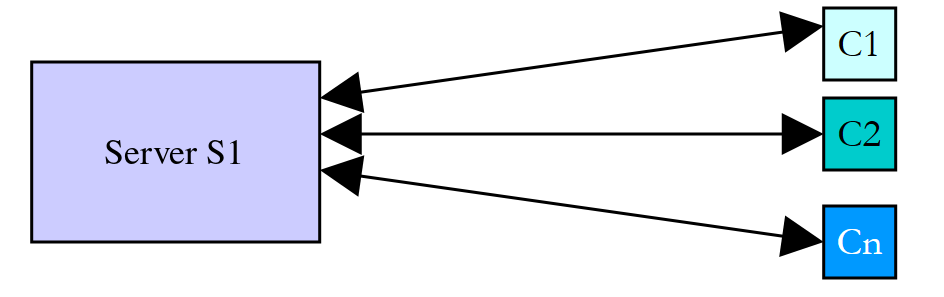
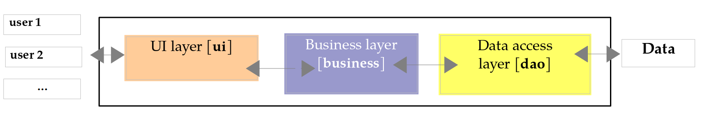

8. Ausführungsthreads
Dieses Kapitel führt in die gleichzeitige Ausführung mehrerer Codeabschnitte innerhalb eines Programms ein: Threads (Ausführungsthreads) und die Werkzeuge zu ihrer Synchronisierung. Vor etwa zwanzig Jahren hatten die meisten Rechner nur einen Prozessor, und die Parallelität war weitgehend eine Illusion, die das Betriebssystem aufrechterhielt. Heute besitzt selbst der einfachste Laptop mehrere Kerne: Mehrere Threads laufen tatsächlich gleichzeitig, wodurch die hier behandelten Synchronisierungsprobleme noch häufiger auftreten.
Java unterstützt Threads seit seiner allerersten Version (1996): die Klasse [Thread], das Schlüsselwort [synchronized] und die Methoden [wait] / [notify] der Klasse [Object]. Java 5 (2004) fügte das Paket [java.util.concurrent] und seine Unterpakete [java.util.concurrent.locks] und [java.util.concurrent.atomic] hinzu: Sperren, Semaphore, nebenläufige Collections, Thread-Pools usw. Java 7 brachte das [Fork/Join]-Framework, Java 8 führte parallele Streams ein, und Java 21 führte virtuelle Threads ein; all das hat die Art, wie Server geschrieben werden, tiefgreifend verändert. Java 25 schließlich führt an den Gültigkeitsbereich gebundene Werte ein ([ScopedValue]). Wir werden all diese Werkzeuge in diesem Kapitel untersuchen.
Die Beispiele sind kompakte Quelldateien ([java Threads01.java]) im Ordner [08-threads]. Denken Sie daran, dass eine kompakte Quelldatei automatisch das gesamte Modul [java.base] importiert: Die Klassen der Pakete [java.util.concurrent], [java.util.concurrent.locks], [java.util.concurrent.atomic] und [java.time] können daher ohne die Anweisung [import] verwendet werden.
Ein Hinweis, bevor Sie beginnen: Die Ergebnisse eines Multithreading-Programms variieren von einem Lauf zum nächsten. Die Reihenfolge, in der den Threads der Prozessor zugeteilt wird, hängt vom Betriebssystem, von der Anzahl der Prozessoren und von der Auslastung des Rechners ab. Die in diesem Kapitel gezeigten Ergebnisse wurden auf einem Linux-Rechner mit zwei Prozessoren erzielt, der mit anderen sehr aktiven Programmen geteilt wurde. Wenn Sie die Beispiele ausführen, erhalten Sie ähnliche Ergebnisse, die aber selten identisch sein werden. Wir geben jeweils an, was reproduzierbar ist und was nicht.
8.1. Die Klasse Thread
Wenn eine Anwendung gestartet wird, läuft sie in einem Ausführungsfluss, der Thread genannt wird. Die Java-Klasse, die einen Thread modelliert, ist die Klasse [java.lang.Thread]. Ihre wichtigsten Konstruktoren und Methoden sind die folgenden:
Member | Rolle |
[Thread(Runnable task)], [Thread(Runnable task, String name)] | Erzeugt einen Thread, der die Methode [run] von [task] ausführt. [Runnable] ist die funktionale Schnittstelle für [void run()]: Meist wird ihr ein Lambda oder eine Methodenreferenz übergeben |
[static Thread.Builder.OfPlatform ofPlatform()], [static Thread.Builder.OfVirtual ofVirtual()] | (Java 21) liefern einen Builder für Plattform-Threads bzw. virtuelle Threads, den man (Name, Daemon usw.) konfiguriert, bevor man den Thread erzeugt |
[static Thread currentThread()] | der Thread, der den Code ausführt, der diese Methode aufgerufen hat |
[String getName()], [void setName(String name)] | der Name des Threads, nützlich für die Nachverfolgung |
[long threadId()] | (Java 19) eine eindeutige numerische Kennung des Threads; sie ersetzt [getId()], das veraltet ist |
[boolean isDaemon()], [void setDaemon(boolean b)] | Gibt an (und legt fest), ob der Thread ein Daemon-Thread ist (siehe unten) |
[int getPriority()], [void setPriority(int p)] | die Priorität des Threads, von 1 ([MIN_PRIORITY]) bis 10 ([MAX_PRIORITY]), mit 5 ([NORM_PRIORITY]) als Standardwert |
[Thread.State getState()], [boolean isAlive()] | der Zustand des Threads ([NEW], [RUNNABLE], [BLOCKED], [WAITING], [TIMED_WAITING], [TERMINATED]); [isAlive] gibt an, ob er gestartet, aber noch nicht beendet wurde |
[boolean isVirtual()] | (Java 21) gibt an, ob der Thread ein virtueller Thread ist |
[void start()] | startet die Ausführung des Threads |
[void join()], [boolean join(Duration timeout)] | Der Thread T1, der [T2.join()] ausführt, ist blockiert, bis der Thread T2 beendet ist. Die zweite Form (Java 19) begrenzt die Wartezeit und gibt an, ob T2 beendet ist |
[static void sleep(long ms)], [static void sleep(Duration d)] | der Thread, der die Methode ausführt, wird für [ms] Millisekunden (für die Dauer [d]) angehalten. Er gibt die CPU ab, die einem anderen Thread zugeteilt wird |
[void interrupt()], [boolean isInterrupted()] | bittet den Thread, sich anzuhalten; prüft, ob ein Anhalten angefordert wurde (siehe unten) |
Die Methoden [join] und [sleep] lösen die geprüfte Ausnahme [InterruptedException] aus, wenn der Thread während des Wartens unterbrochen wird: Der Compiler verlangt, dass sie behandelt oder deklariert wird. Ihre Bedeutung erläutern wir im Abschnitt über Unterbrechungen.
Die Klasse [Thread] besitzt außerdem eine Methode [stop], die früher einen Thread zwangsweise beendete. Sie ist seit Java 1.2 veraltet und löst seit Java 20 lediglich die Ausnahme [UnsupportedOperationException] aus: Ein abruptes Anhalten eines Threads könnte die Daten, die er gerade bearbeitete, in einem inkonsistenten Zustand hinterlassen. Heute bittet man einen Thread, sich kooperativ zu beenden, indem man ihn unterbricht: Dies sehen wir uns etwas später an.
Hier ist eine erste Anwendung, die die Existenz eines Haupt-Ausführungsthreads zeigt – desjenigen, der die Methode [main] ausführt. Das Programm [Threads01.java]lautet wie folgt:
Ergebnisse:
Kommentare:
- Zeile 5: Es wird eine Referenz auf den Thread abgerufen, der das Programm ausführt;
- Zeilen 7–10: Wir zeigen seinen Namen an, ändern ihn und zeigen ihn erneut an. Anfangs heißt der Hauptthread [main] (Zeile 2 der Ergebnisse): Der Java-Launcher hat ihm diesen Namen zugewiesen;
- Zeilen 12–18: einige Eigenschaften des Threads. Bei dieser Ausführung hat der Hauptthread die ID 3: Die virtuelle Maschine erzeugt einige Threads für ihre eigenen Zwecke, bevor sie [main] ausführt, und diese ID kann von einer Java-Version zur anderen variieren. Er ist weder ein Daemon-Thread ([isDaemon()] ist [false]) noch ein virtueller Thread (diese beiden Konzepte besprechen wir später); seine Priorität ist die normale Priorität 5; er läuft gerade ([RUNNABLE]). Die Methode [toString] des Threads (Zeile 17) zeigt seine ID, seinen Namen, seine Priorität und den Namen seiner Thread-Gruppe ([main]) an;
- Zeile 18: Der Rechner, auf dem das Beispiel ausgeführt wurde, hat 2 Prozessoren;
- Zeilen 21–26: eine Schleife, die jede Sekunde eine Ausgabe erzeugt. [Thread.sleep(1000)] hält den Hauptthread für eine Sekunde an. Da [sleep] die geprüfte Ausnahme [InterruptedException] auslösen kann, deklariert die Methode [main] sie in ihrer [throws]-Klausel (Zeile 3). Beachten Sie das Format [HH:mm:ss] (Stunden 0 bis 23): Das Format [hh] würde die Stunden 1 bis 12 anzeigen.
8.2. Ausführungsthreads erzeugen
Es ist möglich, Anwendungen zu haben, in denen Codeabschnitte „gleichzeitig“ in verschiedenen Ausführungsthreads ablaufen. Hat der Rechner weniger Prozessoren als ausführungsbereite Threads, teilen sich die Threads die Prozessoren: Jeder erhält reihum für einen kurzen Moment (einige Millisekunden) Zugriff auf einen Prozessor. Auf einem Mehrprozessorrechner laufen mehrere Threads tatsächlich gleichzeitig. Die einem Thread zugeteilte Zeit hängt von verschiedenen Faktoren ab, darunter seine Priorität, die einen Standardwert hat, aber programmgesteuert festgelegt werden kann ([setPriority]); dies ist lediglich ein Richtwert, den das Betriebssystem ignorieren darf (Linux ignoriert ihn standardmäßig). Ein Thread, der Zugriff auf den Prozessor hat, kann ihn vorzeitig freigeben:
- indem er auf ein Ereignis wartet (Beendigung eines anderen Threads mit [join], Warten auf ein Signal);
- indem er für eine bestimmte Zeitspanne schläft ([sleep]).
Ein Thread T wird zunächst beispielsweise mit dem Konstruktor [new Thread(task, name)] erzeugt, wobei [task] ein Objekt ist, das die funktionale Schnittstelle [Runnable] implementiert, deren einzige Methode [void run()] ist. Dieses Objekt ist meist ein Lambda oder eine Methodenreferenz (funktionale Schnittstellen wurden in Kapitel 7 eingeführt). In älterem Code begegnen Ihnen möglicherweise auch von *[Thread]* abgeleitete Klassen, die ihre Methode *[run]* neu definieren: Dies wird nicht empfohlen, da es die auszuführende Aufgabe mit dem Mittel ihrer Ausführung vermischt.
Das Erzeugen eines Threads startet ihn nicht:
- Die Ausführung des Threads T wird durch [T.start()] gestartet: Die Methode [run] der dem Konstruktor von T übergebenen Aufgabe wird dann vom Thread T ausgeführt. Der Code, der die Anweisung [T.start()] ausführt, wartet nicht auf das Ende des Threads T: Er geht sofort zur nächsten Anweisung über. Wir haben nun zwei Threads, die parallel laufen. Sie müssen oft miteinander kommunizieren, um den Fortschritt der gemeinsamen Arbeit zu verfolgen: Dies ist das Problem der Synchronisierung von Threads;
- Einmal gestartet, läuft der Thread T autonom. Er endet, wenn die Methode, die er ausführt, beendet ist;
- man kann mit [T.join()] auf das Ende seiner Ausführung warten. Dies ist eine blockierende Anweisung: Der Thread, der sie ausführt, ist blockiert, bis der Thread T seine Arbeit beendet hat. Dies ist eine grundlegende Synchronisierungsmethode.
Das Programm [Threads02.java] lautet wie folgt:
Kommentare:
- Zeile 5: Wir geben dem Hauptthread einen Namen;
- Zeilen 8–14: 5 Threads werden erzeugt und gestartet. Ihre Referenzen werden in einem Array gespeichert, damit sie später wieder abgerufen werden können. Jeder Thread führt die Methode [display] in den Zeilen 21–30 aus;
- Zeile 11: Die Methodenreferenz [this::display] wird automatisch in ein Objekt [Runnable] umgewandelt: Die Methode [display] hat keine Parameter und liefert kein Ergebnis, genau wie [run]. Wir schreiben [this::display] , weil in einer kompakten Quelldatei außerhalb jeder Klasse deklarierte Methoden Instanzmethoden der impliziten Klasse sind, deren Name im Code nicht verwendet werden kann. Der zweite Parameter des Konstruktors ist der Name des Threads;
- Zeile 13: Thread Nr. i wird gestartet. Diese Operation ist nicht blockierend: Thread Nr. i läuft parallel zum Hauptthread, der ihn gestartet hat;
- Zeile 17: Der Hauptthread erreicht das Ende des Programms;
- Zeilen 21–30: Die Methode [display] zeigt den Namen und die ID des Threads an, der sie ausführt, sowie die Start- und Endzeit (auf die Millisekunde genau) der Ausführung;
- Zeile 27: Jeder Thread, der die Methode [display] ausführt, pausiert für 1 Sekunde. Der Prozessor wird dann an einen anderen Thread übergeben, der auf den Prozessor wartet. Nach Ablauf der 1-Sekunden-Pause kann der pausierte Thread den Prozessor wieder erhalten. Er bekommt ihn, wenn er an der Reihe ist;
- Zeilen 33–40: Die Methode [sleep] kapselt [Thread.sleep]. Die Methode [run] von [Runnable] deklariert keine geprüften Ausnahmen: Daher kann die Methode [display] die von [sleep] ausgelöste Ausnahme [InterruptedException] nicht nach außen dringen lassen. Die Methode [sleep] fängt sie ab und setzt das Unterbrechungsflag des Threads zurück (Zeile 38); diese Aktion erläutern wir im Abschnitt über Unterbrechungen. Dieser kleinen Methode werden wir in den meisten Programmen dieses Kapitels begegnen;
- Zeilen 43–45: Die Methode [time] liefert die aktuelle Uhrzeit im Format [HH:mm:ss.SSS] ([SSS]: die Millisekunden).
Ergebnisse:
Diese Ergebnisse sind sehr aufschlussreich:
- Erstens sehen wir, dass das Starten eines Threads nicht blockierend ist. Der Hauptthread hat 5 Threads gestartet und das Ende des Programms erreicht (Zeile 6), obwohl Thread 3 noch keine erste Meldung angezeigt hatte;
- die Ausführungsreihenfolge der Threads ist unvorhersehbar: Bei diesem Lauf hat Thread 4 seine Startmeldung vor Thread 0 angezeigt. Das Betriebssystem hat hier 6 Threads und 2 Prozessoren; es teilt diesen Threads die Prozessoren nach eigenen Regeln zu;
- Wir stellen außerdem fest, dass die Reihenfolge der Ausgaben nicht immer der Reihenfolge der angezeigten Uhrzeiten entspricht: Der Hauptthread hat sein Ende um 13.725 angezeigt, nach Meldungen mit Zeitangaben von 13.727 bis 13.732. Die Uhrzeit wird vor der Ausgabe berechnet, und in der Zwischenzeit kann ein anderer Thread auf die Konsole geschrieben haben. [IO.println] (wie [System.out.println]) ist threadsicher: Zwei Zeilen, die von zwei Threads geschrieben werden, vermischen sich nicht, aber ihre Reihenfolge ist nicht garantiert;
- die IDs der erzeugten Threads (22 bis 26) zeigen, dass die virtuelle Maschine bereits etwa zwanzig Threads für ihre eigenen Zwecke erzeugt hatte (Garbage Collection, Just-in-Time-Compiler usw.);
- jeder Thread pausiert bei [sleep] eine Sekunde lang und beendet dann die Ausführung der Methode [display];
- Schließlich hat sich das Programm nicht beendet, als der Hauptthread seine Arbeit abgeschlossen hatte: Die virtuelle Maschine hat gewartet, bis alle fünf Threads beendet waren. Das liegt daran, dass diese Threads keine Daemon-Threads sind: Die virtuelle Java-Maschine wird beendet, wenn alle ihre Nicht-Daemon-Threads beendet sind.
Umgekehrt kann ein Thread vor seinem Start mit als Daemon-Thread [setDaemon(true)] deklariert werden. Daemon-Threads sind Dienst-Threads, die die virtuelle Maschine nicht am Beenden hindern: Wenn der letzte Nicht-Daemon-Thread endet, werden sie angehalten. Das Programm [Threads03.java] lautet wie folgt:
Kommentare:
- Zeile 8: Ab Java 21 liefert die Methode [Thread.ofPlatform()] einen Thread-Builder vom Typ [Thread.Builder], der über verkettete Aufrufe konfiguriert wird: [daemon()] fordert Daemon-Threads an; [name("", 0)] legt fest, dass die Threads mit einem Präfix (hier der leeren Zeichenkette) benannt werden, gefolgt von einer Zahl, die bei 0 beginnt und für jeden erzeugten Thread um eins erhöht wird. Plattform-Threads sind die „klassischen“ Threads, die wir seit Beginn dieses Kapitels verwenden, im Gegensatz zu den später behandelten virtuellen Threads;
- Zeile 12: Die Methode [start(Runnable)] des Builders erzeugt einen Thread und startet ihn sofort. Seine Methode [unstarted(Runnable)] erzeugt einen Thread, ohne ihn zu starten;
- Zeile 16: Der Hauptthread wartet 100 ms, um den Threads Zeit zum Starten zu geben, und beendet sich dann.
Ergebnisse:
Drei der fünf Threads haben mit der Ausführung begonnen, dann hat sich der Hauptthread beendet (Zeile 4). Thread 3 hatte die Zeit für seine Meldung berechnet, bevor der Hauptthread endete, konnte sie aber erst danach anzeigen (Zeile 5), während die virtuelle Maschine herunterfuhr. Die Daemon-Threads wurden dann während ihrer einsekündigen Schlafphase beendet: Es wurden keine Endmeldungen angezeigt. Zwei Threads hatten nicht einmal Zeit, ihre Startmeldungen anzuzeigen: Da der Rechner stark ausgelastet war, reichten 100 ms nicht aus, damit sie die CPU erhielten (ein weiterer Lauf liefert eine andere Anzahl von Startmeldungen, aber nie Endmeldungen). Denselben Effekt erzielt man, indem man [main] mit [System.exit(0)] beendet, was die virtuelle Maschine und damit alle Threads der Anwendung herunterfährt, ob Daemon-Threads oder nicht. Virtuelle Threads, die wir später besprechen, sind immer Daemon-Threads.
Wenn der Hauptthread auf das Ende der von ihm erzeugten Threads warten möchte, verwendet er die Methode [join]. Das Programm [Threads04.java] zeigt außerdem eine weitere Möglichkeit, den Code festzulegen, den ein Thread ausführen soll: ein Lambda.
Kommentare:
- Zeile 13: Der Thread führt das Lambda [() -> display(number, 1000 + 100 * number)] aus. Ein Lambda ohne Parameter und ohne Rückgabewert ist mit der Schnittstelle [Runnable] kompatibel. Diese Syntax erlaubt es, eine Methode mit typisierten Parametern aufzurufen (hier ein [int] und ein [long]), während [run] keine hat;
- Zeile 11: Das Lambda verwendet eine Kopie der Schleifenvariablen [i]. Das ist zwingend: Ein Lambda darf nur lokale Variablen verwenden, die tatsächlich final sind, das heißt nach der Initialisierung nie verändert werden. Die Variable [i] wird von der Schleife verändert ([i++]): Würde das Lambda sie verwenden, würde der Compiler das Programm ablehnen („local variables referenced from a lambda expression must be final or effectively final“). Die im Schleifenrumpf deklarierte Variable [number] ist dagegen bei jedem Durchlauf eine neue Variable und wird nie verändert. Diese Regel schützt vor einer häufigen Falle: Ohne sie könnte ein Thread, der spät startet, den Wert von [i] aus einem späteren Durchlauf oder sogar den Endwert 5 lesen;
- Zeilen 18–21: Der Hauptthread wartet auf jeden der Threads. Er ist zunächst blockiert, während er auf Thread 0 wartet, dann auf Thread 1 und so weiter. Wenn er die Schleife verlässt, sind die 5 von ihm gestarteten Threads alle beendet. Da [join] eine [InterruptedException] auslösen kann, gibt [main] diese Ausnahme weiter (Zeile 3);
- Zeile 31: Aufgabe Nr. i schläft 1000 + 100 × i Millisekunden, sodass die Threads in einer bekannten Reihenfolge enden.
Ergebnisse:
Die Startmeldungen erscheinen in beliebiger Reihenfolge, die Endmeldungen dagegen in numerischer Reihenfolge, da die Schlafdauern ansteigen: Dieser Teil des Ergebnisses ist reproduzierbar. Die letzte Zeile zeigt, dass sich der Hauptthread nach den von ihm gestarteten Threads beendet hat, und zwar in dem Moment, in dem der letzte von ihnen endete.
8.3. Einen Thread anhalten: Unterbrechung
Wie hält man einen Thread an, bevor er seine Arbeit beendet hat, zum Beispiel wenn der Benutzer einen lang laufenden Vorgang abbricht? Java erlaubt es nicht, einen Thread zu töten; stattdessen bietet es einen kooperativen Mechanismus, die Unterbrechung:
- Jeder Thread besitzt ein Unterbrechungsflag, einen booleschen Wert, der anfangs auf [false] steht;
- Ein Thread T1, der den Thread T2 anhalten möchte, ruft [T2.interrupt()] auf. Dadurch wird das Unterbrechungsflag von T2 gesetzt. Dies ist eine Aufforderung zur Beendigung: T2 wird nicht beendet; es liegt an diesem Thread, zu entscheiden, wann und wie er sich beendet, um seine Daten in einem konsistenten Zustand zu hinterlassen;
- Wenn T2 in einer wartenden Methode blockiert ist ([sleep], [join], [wait] und die meisten blockierenden Methoden in [java.util.concurrent]), wird er aufgeweckt: Die Methode löst die Ausnahme [InterruptedException] aus, und das Unterbrechungsflag wird auf [false] zurückgesetzt;
- Wenn T2 eine Berechnung durchführt, ohne je zu warten, muss er sein eigenes Flag in regelmäßigen Abständen mit [Thread.currentThread().isInterrupted()] prüfen.
Deshalb deklarieren blockierende Methoden die geprüfte Ausnahme [InterruptedException]: Der Compiler verlangt vom Programmierer, zu entscheiden, was mit einer Anhalteanforderung geschehen soll. Es gibt zwei korrekte Reaktionen: die Ausnahme an den Aufrufer weiterreichen (indem man sie in der [throws]-Klausel deklariert) oder sie abfangen und die Aufgabe sauber beenden. Wenn keine der beiden Möglichkeiten in Betracht kommt, wie in der Methode [sleep] des vorherigen Programms, wird das Flag mit [Thread.currentThread().interrupt()] wieder gesetzt, damit der aufrufende Code die Anforderung weiterhin sehen kann. Die einzige falsche Reaktion besteht darin, die Ausnahme zu ignorieren. Das Programm [Threads05.java] zeigt alle drei Fälle:
Kommentare:
- Zeilen 5–18: Der Thread [sleeper] verbringt die meiste Zeit in [Thread.sleep]. Die Schleife [while (true)] hat keine Abbruchbedingung: Es ist die Ausnahme [InterruptedException], die von [sleep] ausgelöst wird, wenn der Thread unterbrochen wird, die die Schleife verlassen lässt (Zeile 14). Das Lambda ist eine Anweisung [try] , die die gesamte Arbeit des Threads umfasst: Nach Erhalt der Ausnahme zeigt der Thread eine Meldung an und beendet sich dann;
- Zeilen 20–27: Der Thread [calculator] wartet nie. Er prüft sein Unterbrechungsflag bei jedem Schleifendurchlauf (Zeile 23);
- Zeilen 29–38: Der Thread [deaf] fängt [InterruptedException] ab und macht weiter, als wäre nichts geschehen. Die Anforderung zum Anhalten geht verloren: Dies ist der Fehler, den Sie vermeiden müssen. Er ist ein Daemon-Thread, damit sich das Programm beenden kann, ohne auf ihn zu warten;
- Zeile 41: Der Hauptthread lässt die anderen Threads eine Sekunde lang laufen;
- Zeilen 43–45: Er fordert die drei Threads auf, sich zu beenden;
- Zeilen 47–50: Er wartet auf jeden Thread, höchstens jedoch eine Sekunde lang. Die Methode [join(Duration)] (Java 19) gibt [true] zurück, wenn der Thread innerhalb dieser Zeit beendet wurde, andernfalls [false]. [Duration.ofSeconds(1)] stellt eine Dauer von einer Sekunde dar (Klasse [java.time.Duration]).
Ergebnisse:
Die Threads [sleeper] und [calculator] beendeten sich wenige Millisekunden nach der Aufforderung; der Thread [deaf] ignorierte die Aufforderung und war eine Sekunde später noch nicht beendet ([false], letzte Zeile). Die Anzahl der Durchläufe des Calculators variiert von Lauf zu Lauf stark, je nach dem Anteil an CPU-Zeit, den er erhielt; der Rest des Ergebnisses ist reproduzierbar.
Die Unterbrechung ist der Mechanismus, der in der gesamten Java-Bibliothek zum Anhalten dient: Wir werden später sehen, dass die Methode [cancel] einer Aufgabe ([Future]) und das abrupte Beenden eines Thread-Pools ([shutdownNow]) die betroffenen Threads unterbrechen. Das nächste Kapitel stellt weitere Möglichkeiten vor, asynchrone Verarbeitungen abzubrechen, etwa Timeouts.
8.4. Virtuelle Threads
Die bisher erzeugten Threads sind Plattform-Threads: Jeder von ihnen ist eine Hülle um einen Betriebssystem-Thread, den er während seiner gesamten Lebensdauer belegt. Ein System-Thread ist eine kostspielige Ressource: Seine Erzeugung braucht Zeit, sein Stack reserviert Speicher (in der Größenordnung eines Megabytes), und das System kann nicht mehr als einige Tausend davon effizient verwalten. Ein Server, der jedem Client einen Thread widmet (siehe das Schaubild im folgenden Absatz), verbringt jedoch die meiste Zeit mit Warten: auf eine Antwort einer Datenbank, auf die nächste Anfrage des Clients … Während dieser Wartezeiten ist der System-Thread blockiert und nicht nutzbar.
Java 21 hat virtuelle Threads („virtual threads“, JEP 444) eingeführt. Ein virtueller Thread ist ein Objekt [Thread] wie jedes andere, wird aber von der Java Virtual Machine statt vom Betriebssystem verwaltet:
- Zur Ausführung wird ein virtueller Thread auf einem Plattform-Thread eingehängt , dem sogenannten „Carrier-Thread“. Die Carrier-Threads bilden einen kleinen Pool, dessen Größe standardmäßig der Anzahl der Prozessoren entspricht;
- Wenn ein virtueller Thread blockiert ([sleep], Warten auf Netzwerk-E/A, eine Sperre, eine blockierende Warteschlange usw.), wird er ausgehängt: Sein Stack wird im Speicher der virtuellen Maschine abgelegt, und der Carrier-Thread steht sofort für einen anderen virtuellen Thread zur Verfügung. Wenn das Warten endet, wird der virtuelle Thread wieder an einen Host-Thread gehängt – nicht unbedingt an denselben;
- Ein virtueller Thread belegt einige Hundert Byte: Es können Millionen davon erzeugt werden.
Das Programm [Threads06.java] vergleicht den Start von 10.000 Plattform-Threads und 10.000 virtuellen Threads, die jeweils eine Sekunde lang schlafen:
Kommentare:
- Zeilen 6–7: Die Methode [measure] wird zweimal aufgerufen, zuerst mit einem Builder für Plattform-Threads ([Thread.ofPlatform()]) und dann mit einem Builder für virtuelle Threads ([Thread.ofVirtual()]). Beide Builder haben den gemeinsamen Typ [Thread.Builder]: Der übrige Code ist identisch;
- Zeilen 20–31: Die Methode [measure] startet [nbThreads] Threads, die eine Sekunde lang schlafen, wartet auf ihr Ende und zeigt die Gesamtdauer an. Die Methode [System.nanoTime()] liefert eine Zeit in Nanosekunden, die nur zur Messung von Dauern dient;
- Zeilen 10–14: Ein virtueller Thread namens [virtual] zeigt seine Textdarstellung vor und nach einer Schlafphase an;
- Zeile 16: Ein virtueller Thread ist immer ein Daemon-Thread.
Ergebnisse:
- 10.000 Plattform-Threads benötigten mehrere Sekunden für etwas, das eine Sekunde hätte dauern sollen: Das Erzeugen der System-Threads und die Verwaltung ihrer Stacks waren teuer. Bei 100.000 Threads würde das Programm wahrscheinlich aus Mangel an Speicher oder verfügbaren System-Threads scheitern;
- 10.000 virtuelle Threads erledigten dieselbe Aufgabe in etwas mehr als einer Sekunde: Im Ruhezustand belegten sie keine System-Threads. Die genauen Zeiten variieren von Lauf zu Lauf, aber der Unterschied zwischen den beiden Thread-Arten ist reproduzierbar;
- Die Textdarstellung eines virtuellen Threads ([VirtualThread[#…,virtual]]) gibt nach dem Zeichen [@] den Host-Thread an, auf dem er eingehängt ist: ein Thread aus dem Pool [ForkJoinPool-1], auf den wir später zurückkommen. Nach einer Unterbrechung kann der virtuelle Thread seine Ausführung auf einem anderen Carrier fortsetzen.
Virtuelle Threads machen Berechnungen nicht schneller: Eine Berechnung, die den Prozessor beschäftigt, ohne je zu warten, läuft in einem virtuellen Thread nicht schneller als in einem Plattform-Thread, und die Anzahl gleichzeitiger Berechnungen bleibt durch die Anzahl der Prozessoren begrenzt. Ihr Nutzen liegt in der Möglichkeit, jeder Aufgabe, die die meiste Zeit mit Warten verbringt, ohne Rücksicht auf die Kosten einen Thread zu widmen: Das ist bei Servern der Fall, im folgenden Absatz sowie in den Kapiteln 12 und 13. Alles, was wir zur Thread-Synchronisierung behandeln, gilt gleichermaßen für virtuelle Threads und Plattform-Threads.
8.5. Nutzen von Threads
Nachdem wir die Existenz eines Standard-Threads – desjenigen, der die Methode [main] ausführt – hervorgehoben haben und wissen, wie man weitere erzeugt, wollen wir den Nutzen von Threads betrachten. Sie haben zwei Hauptverwendungen:
- alle Prozessoren des Rechners für eine zeitaufwendige Berechnung zu nutzen: Die Arbeit wird in Teile zerlegt, die verschiedenen Threads zugewiesen werden. Das tun wir am Ende dieses Kapitels mit parallelen Streams und dem [Fork/Join]-Framework;
- mehrere Aufgaben gleichzeitig auszuführen, insbesondere wenn einige davon überwiegend aus Warten bestehen (auf eine Netzwerkantwort, einen Festplattenzugriff oder eine Benutzereingabe). Dies ist bei Client-Server-Internetanwendungen der Fall, die wir in Kapitel 12 behandeln.
In einer Client-Server-Internetanwendung antwortet ein auf einem Rechner S1 befindlicher Server auf Anfragen von Clients, die sich auf entfernten Rechnern C1, C2, …, Cn befinden:

Wir nutzen täglich Internetanwendungen, die diesem Muster folgen: Webdienste, E-Mail, Dateiübertragungen usw. Im obigen Schaubild muss der Server S1 die Clients Ci gleichzeitig bedienen. Nehmen wir das Beispiel eines Dateiservers: Wir wissen, dass eine Übertragung manchmal mehrere Minuten dauern kann. Es kommt nicht infrage, dass ein einzelner Client den Server so lange blockiert. Eine übliche Lösung besteht darin, dass der Server so viele Ausführungsthreads erzeugt, wie es Clients gibt. Jeder Thread ist dann für die Bearbeitung eines bestimmten Clients zuständig:

Bei Plattform-Threads verwendet der Server faktisch einen Thread-Pool – der später behandelt wird –, dessen begrenzte Anzahl von Threads die Zahl der gleichzeitig bedienten Clients nach oben begrenzt. Bei virtuellen Threads wird das obige Schema wieder zur richtigen Lösung: ein virtueller Thread pro Client, selbst bei Zehntausenden von Clients, da ein wartender Client keine System-Threads belegt. Das ermöglichen moderne Java-Webserver wie Tomcat – den wir in Kapitel 13 verwenden werden – heute.
8.6. Informationsaustausch zwischen Threads
In den bisherigen Beispielen führten die Threads eine Methode ohne Parameter oder ein Lambda aus, das eine Methode mit Parametern aufrief. Da die Methode *[run]* von [Runnable] weder Parameter noch einen Rückgabewert hat, ist es das Lambda, das dem gestarteten Thread Informationen übergibt: Es erfasst die Variablen, die es benötigt. Verweist die erfasste Variable auf ein Objekt, kann der gestartete Thread darin auch Ergebnisse ablegen, die der startende Thread liest. Das Programm [Threads07.java] lautet wie folgt:
Kommentare:
- Zeilen 48–75: Die mit jedem Thread ausgetauschte Information ist ein Objekt [Data]. Zwischen dem startenden und dem gestarteten Thread findet ein Informationsaustausch in beide Richtungen statt. [start] und [duration] sind [final]-Felder: Sie werden vom Konstruktor ein für alle Mal gesetzt:
- [start]: der Startzeitpunkt der Ausführung des Threads, gesetzt vom startenden Thread;
- [duration]: Dauer der Schlafphase des gestarteten Threads in Sekunden, gesetzt vom startenden Thread;
- [end]: der Endzeitpunkt der Ausführung des Threads, gesetzt vom gestarteten Thread;
- Zeile 12: Ein Objekt [Data] wird erzeugt und im Array [data] gespeichert (Zeile 13);
- Zeile 15: Das Lambda [() -> sleep(d)] erfasst die Variable [d], die effektiv final ist: Der gestartete Thread führt die Methode [sleep] in den Zeilen 36–45 mit dem Objekt [d] als Parameter aus;
- Zeilen 21–30: Der Hauptthread wartet auf das Ende jedes der von ihm gestarteten Threads, ruft dann das Objekt [data[i]] von Thread Nr. i ab und zeigt dessen Inhalt an. Die tatsächliche Dauer wird mit [Duration.between(d.getStart(), d.getEnd())] berechnet;
- Zeile 39: Das Feld [duration] des Parameters legt die Schlafdauer fest;
- Zeile 44: Das Feld [end] des Parameters wird befüllt.
Ergebnisse:
Dieses Beispiel zeigt, dass zwei Threads Informationen austauschen können:
- Der aufrufende Thread kann die Ausführung des aufgerufenen Threads steuern, indem er ihm Informationen liefert;
- der gestartete Thread kann dem startenden Thread Ergebnisse zurückgeben.
Damit der aufrufende Thread weiß, wann die Ergebnisse, auf die er wartet, verfügbar sind, muss er benachrichtigt werden, wenn der aufgerufene Thread beendet ist. Hier hat er mit der Methode [join] auf das Ende des Threads gewartet. Dabei geht es nicht nur um den Zeitpunkt: Wie wir im Abschnitt über das Schlüsselwort [volatile] sehen werden, ist ein Schreibvorgang eines Threads für einen anderen nicht unbedingt sichtbar. Das Speichermodell von Java garantiert, dass alles, was ein Thread geschrieben hat, für den Thread sichtbar ist, der mit [join] auf sein Ende gewartet hat, und dass alles, was der startende Thread vor [start] geschrieben hat, für den gestarteten Thread sichtbar ist. Weitere Synchronisierungsmöglichkeiten untersuchen wir später.
Anstelle eines Lambdas könnten wir eine Klasse schreiben, die [Runnable] implementiert und in deren Feldern die ausgetauschten Informationen stehen. Das Lambda ist prägnanter; es ist heute der gebräuchlichste Ansatz. Um das Ergebnis einer Verarbeitung abzurufen, betrachten wir später auch die Schnittstelle [Callable<V>], deren Methode [V call()] ein Ergebnis zurückgibt.
8.7. Nebenläufiger Zugriff auf gemeinsame Ressourcen
8.7.1. Nicht synchronisierter nebenläufiger Zugriff
Im vorigen Abschnitt wurden Informationen nur zwischen zwei Threads und zu ganz bestimmten Zeitpunkten ausgetauscht: Dies war ein klassisches Beispiel für die Parameterübergabe. Es gibt andere Fälle, in denen Informationen von mehreren Threads gemeinsam genutzt werden, die sie womöglich gleichzeitig lesen oder aktualisieren wollen. Damit stellt sich die Frage der Integrität dieser Informationen. Angenommen, die gemeinsam genutzte Information ist eine Struktur S, die verschiedene Informationen I1, I2, …, In enthält:
- Ein Thread T1 beginnt, die Struktur S zu aktualisieren: Er ändert das Feld I1 und wird unterbrochen, bevor er die vollständige Aktualisierung der Struktur S abgeschlossen hat;
- ein Thread T2, der den Prozessor erhält, liest dann die Struktur S, um Entscheidungen zu treffen. Er liest eine Struktur in einem instabilen Zustand: Einige Felder sind aktuell, andere nicht.
Diese Situation nennt man nebenläufigen Zugriff auf eine gemeinsam genutzte Ressource – hier die Struktur S. Sie ist oft schwer zu beherrschen. Betrachten wir das folgende Beispiel, um die möglichen Probleme zu veranschaulichen:
- Eine Anwendung erzeugt n Threads, wobei n als Parameter übergeben wird;
- die gemeinsame Ressource ist ein Zähler, der von jedem erzeugten Thread erhöht werden muss;
- am Ende der Anwendung wird der Wert des Zählers angezeigt. Er müsste also n entsprechen.
Das Programm [Threads08.java] lautet wie folgt:
Kommentare:
- Zeilen 5–11: Die Anzahl der Threads wird als Argument übergeben. Die Methode [integer] (Zeilen 28–34) liefert die in einer Zeichenkette enthaltene ganze Zahl oder -1, wenn die Zeichenkette keine enthält; die Bedingung in Zeile 7 weist daher sowohl ein fehlendes oder ungültiges Argument als auch eine Zahl außerhalb des Bereichs [1, 100] zurück. Im Fehlerfall schreibt das Programm eine Meldung in die Fehlerausgabe ([System.err]) und beendet sich mit dem Exit-Code 1 ([System.exit(1)]);
- Zeile 16: Jeder Thread führt die statische Methode [increment] der Klasse [Counter] aus. Die Methodenreferenz [Counter::increment] ist hier zulässig, weil [Counter] eine benannte Klasse ist;
- Zeilen 37–58: Die gemeinsame Ressource ist das statische Feld [value] der Klasse [Counter]. Der Zähler ist in einer statischen geschachtelten Klasse gekapselt, mit der Methode [increment] , die jeder Thread ausführt;
- Zeile 49: Der Zähler wird gelesen;
- Zeile 52: Der Thread pausiert 1 Sekunde lang. Er verliert dadurch die CPU;
- Zeile 54: Der Zähler wird erhöht.
Die einsekündige Pause dient nur dazu, den Thread zu zwingen, zwischen dem Lesen und dem Schreiben des Zählers die CPU zu verlieren. In der Praxis gibt es keine Garantie, dass ein Thread zwischen diesen beiden Zeitpunkten nicht unterbrochen wird, und auf einem Mehrprozessorrechner können zwei Threads den Zähler sogar genau gleichzeitig lesen. Die einsekündige Pause systematisiert dieses Risiko lediglich.
Programmargumente werden nach dem Namen der Quelldatei angegeben. Ohne Argumente wird eine Fehlermeldung angezeigt (der Linux-Shell-Befehl ***[echo $?]*** zeigt den Exit-Code des zuletzt ausgeführten Programms an):
Mit 5 Threads:
Betrachtet man diese Ergebnisse, wird klar, was geschieht:
- Ein erster Thread liest den Zähler. Er findet 0. Er pausiert 1 Sekunde und verliert so die CPU;
- ein zweiter Thread liest ebenfalls den Wert des Zählers. Er ist immer noch 0, da der vorherige Thread ihn noch nicht erhöht hat. Auch er pausiert 1 Sekunde;
- in weniger als einer Sekunde haben alle 5 Threads Zeit, den Wert 0 zu lesen;
- beim Aufwachen erhöhen sie den gelesenen Wert 0 und schreiben alle den Wert 1 in den Zähler, wie die letzte Zeile bestätigt (Zeile 12). Dieses falsche Ergebnis ist reproduzierbar: Nur die Reihenfolge der Threads ändert sich von einer Ausführung zur nächsten.
Man könnte einwenden, das Beispiel sei künstlich. Entfernen wir also das sleep und verwenden den Operator [++], der die Illusion einer einzelnen Anweisung erweckt. Das Programm [Threads09.java] lautet wie folgt:
Kommentare:
- Zeilen 5–6: Die Anzahl der Threads (standardmäßig 4) und die Anzahl der Inkrementierungen pro Thread (standardmäßig 50 Millionen) können als Argumente übergeben werden. Das Trennzeichen [_] macht die Konstante [50_000_000] lesbar;
- Zeile 14: Die Threads werden von [Thread.ofPlatform().start(…)] erzeugt und gestartet; sie benötigen keine Namen;
- Zeile 17: Jeder Thread inkrementiert den gemeinsamen Zähler ohne Pause;
- Zeile 27: Im Formatstring zeigt [%,d] eine ganze Zahl mit dem Tausendertrennzeichen der aktuellen Sprache an (hier Englisch: ein Komma). Die Instanzmethode [formatted(…)] (Java 15) einer Zeichenkette entspricht [String.format(string, …)].
Ergebnisse:
Zig Millionen Aktualisierungen gingen verloren, und die Anzahl schwankt von Test zu Test. Die höhere Operation [Counter.value++] wird tatsächlich in mehrere elementare Prozessorbefehle übersetzt: den Wert aus dem Speicher lesen, ihn in einem Register inkrementieren und das Ergebnis in den Speicher schreiben. Wenn zwei Threads denselben Wert lesen, bevor einer von ihnen seinen eigenen geschrieben hat, geht eine Inkrementierung verloren, genau wie im vorherigen Beispiel.
Test 3 verdient eine Erklärung: Hier gingen fast genau 150 Millionen Aktualisierungen verloren, das entspricht der Arbeit von drei der vier Threads. Nach einigen Sekunden Laufzeit hat der Just-in-Time-Compiler (JIT) der virtuellen Maschine die Schleife in den Zeilen 15–18 optimiert: Er hat festgestellt, dass kein anderer Thread den Zähler während der Schleife sehen sollte (nichts im Code verlangt es) und hat den Zähler in einem Prozessorregister abgelegt. Jeder Thread liest den Zähler dann einmal, addiert 50 Millionen in seinem Register hinzu und schreibt ihn am Ende einmal zurück. Wenn alle vier Threads den Wert 0 lesen, bevor einer von ihnen geschrieben hat, gehen drei von vier Ergebnissen verloren; überschneidet sich ihre Arbeit dagegen nicht, ist das Ergebnis korrekt. Bei anderen Läufen dieses Programms lieferten die Tests 2 und 3 tatsächlich den exakten Wert 200.000.000. Nur der erste Test, der vor dieser Optimierung läuft, verliert durchgehend Aktualisierungen. Genau das macht diese Fehler so gefährlich: Ein Programm kann monatelang laufen und dann genau an dem Tag versagen, an dem die Maschine stärker belastet ist oder schneller läuft.
Woher kommt das Problem? Ein Thread hat einen veralteten Wert gelesen, weil ein anderer Thread unterbrochen wurde – oder gleichzeitig auf einem anderen Prozessor arbeitete –, bevor er seine Aktualisierung des Zählers abgeschlossen hatte. Damit sind wir bei den Begriffen der kritischen Ressource und des kritischen Abschnitts eines Programms angelangt:
- Eine kritische Ressource ist eine Ressource, die zu einem Zeitpunkt nur von einem einzigen Thread gehalten werden kann. Hier ist die kritische Ressource der Zähler;
- Ein kritischer Abschnitt eines Programms ist eine Folge von Anweisungen im Ausführungsfluss eines Threads, während der er auf eine kritische Ressource zugreift. Wir müssen sicherstellen, dass der Thread während dieses kritischen Abschnitts der Einzige ist, der auf die Ressource zugreift.
Im Programm [Threads08.java]ist der kritische Abschnitt der Code zwischen dem Lesen des Zählers und dem Schreiben seines neuen Werts:
Um diesen Code auszuführen, muss garantiert sein, dass ein Thread als einziger läuft. Er darf unterbrochen werden, aber während dieser Unterbrechung darf kein anderer Thread denselben Code ausführen können. Java bietet verschiedene Werkzeuge, um den Eintritt in kritische Codeabschnitte auf jeweils einen Thread zu beschränken. Wir betrachten nun einige davon.
8.7.2. Das Schlüsselwort synchronized
Der Block [synchronized] begrenzt einen kritischen Abschnitt wie folgt: [synchronized (lock) { …critical section… }]***. [lock]* ist ein Objekt, das für alle Threads sichtbar ist, die den kritischen Abschnitt ausführen. In Java besitzt jedes Objekt eine interne Sperre, auch Monitor genannt. Der Block [synchronized] stellt sicher, dass zu einem Zeitpunkt nur ein Thread den Monitor des Objekts [lock] hält, sodass nur ein Thread zur selben Zeit den kritischen Abschnitt ausführt: Ein Thread, der auf einen von einem anderen Thread gehaltenen Monitor trifft, wird blockiert, bis der Monitor freigegeben wird. Der Monitor wird beim Verlassen des Blocks freigegeben, unabhängig davon, ob der Austritt normal oder durch eine Ausnahme erfolgt.
Das vorherige Beispiel wird in [Threads10.java] wie folgt umgeschrieben:
Kommentare:
- Zeile 45: [lock] ist das Objekt, das die Synchronisierung aller Threads ermöglicht. Es hat keinen anderen Zweck: Es ist ein einfaches [Object]. Es ist [final]: Die Referenz darf sich niemals ändern, sonst könnten zwei Threads zwei verschiedene Objekte sperren;
- Zeilen 59–69: Der kritische Abschnitt der Methode [increment] ist vom Block [synchronized] umschlossen. Der Thread hält die Sperre, während er eine Sekunde lang schläft: Die anderen Threads können nicht eintreten;
- Zeilen 47–51: Auch das Lesen des Zählers durch den Hauptthread ist durch die Sperre geschützt. Hier ist das nicht unbedingt erforderlich, da der Hauptthread mit [join] auf das Ende der anderen Threads gewartet hat; es ist aber eine gute Praxis: Durch eine Sperre geschützte Daten müssen unter dem Schutz dieser Sperre gelesen und geschrieben werden;
- Zeilen 20–26: Der Hauptthread wartet auf die Threads in umgekehrter Reihenfolge ihrer Erzeugung.
Ergebnisse mit 3 Threads:
- Alle drei Threads fordern nahezu gleichzeitig den Eintritt in den kritischen Abschnitt an;
- nur einer tritt ein – hier Thread 2 (die Reihenfolge des Eintritts ist nicht garantiert: Es tritt nicht unbedingt der zuerst Eingetroffene zuerst ein). Er liest den Zähler, schläft eine Sekunde lang, schreibt den neuen Wert und verlässt den kritischen Abschnitt;
- die beiden anderen Threads werden blockiert, bis der erste den kritischen Abschnitt verlässt, und gehen dann nacheinander hinein. Jeder liest den vom vorherigen geschriebenen Wert. Beachten Sie (Zeilen 8–9), dass Thread 1 den Zähler las, bevor Thread 2 meldete, dass er den kritischen Abschnitt verlassen hatte: Thread 2 hat die Sperre tatsächlich freigegeben, zeigt seine Meldung aber erst nach dem Block [synchronized] an, und Thread 1 war schneller;
- der Hauptthread wartete auf das Ende von Thread 2. Nachdem er über dessen Ende benachrichtigt worden war, wartete er auf das Ende von Thread 1 und dann auf das von Thread 0;
- Die Anzahl der Threads ist korrekt (Zeile 20). Unabhängig von der Reihenfolge, in der die Threads ausgeführt werden, ist dieses Ergebnis reproduzierbar.
Das Schlüsselwort [synchronized] kann auch auf eine ganze Methode angewendet werden: [synchronized void m() {…}] entspricht einem Block [synchronized (this) {…}], der den gesamten Rumpf der Methode umfasst, und [static synchronized void m() {…}] einem Block [synchronized (Counter.class) {…}], der das Klassenobjekt [Class] sperrt. Dies ist die kürzeste Schreibweise, und sie wird häufig verwendet. Sie hat jedoch einen Nachteil: Das gesperrte Objekt ([this] bzw. das [Class]-Objekt) ist von außen sichtbar, und externer Code kann dieselbe Sperre erwerben und unsere blockieren. Daher ist es oft vorzuziehen, ein privates Objekt zu sperren, wie im Beispiel. Aus demselben Grund sperrt man niemals eine Zeichenkette (identische Zeichenkettenliterale sind ein einziges, vom gesamten Programm gemeinsam genutztes Objekt) oder, seit Java 16, ein Objekt einer „wertbasierten“ Klasse wie [Integer] oder [LocalDate] (der Compiler gibt dafür eine Warnung aus).
Ein Thread, der bereits einen Monitor hält, kann einen Block [synchronized] auf demselben Objekt erneut betreten, ohne sich selbst zu blockieren: Die Sperre wird als reentrant bezeichnet. Eine Methode [synchronized] kann somit eine andere Methode [synchronized] desselben Objekts aufrufen.
8.7.3. Die Klasse ReentrantLock
Die Sperre [synchronized] ist einfach, aber starr: Ein Thread, der auf einen Monitor wartet, wartet unbegrenzt, ohne nach einer gewissen Zeit aufgeben zu können und ohne unterbrechbar zu sein. Die Klasse [java.util.concurrent.locks.ReentrantLock] (Java 5) ist eine explizite – ebenfalls reentrante – Sperre, die diese Möglichkeiten bietet. Sie implementiert die Schnittstelle [Lock]. Wir verwenden die folgenden Konstruktoren und Methoden:
Member | Rolle |
[ReentrantLock()], [ReentrantLock(boolean fair)] | erzeugt eine Sperre. Eine faire Sperre ([true]) wird den Threads in der Reihenfolge zugeteilt, in der sie sie angefordert haben; eine nicht faire Sperre (der Standard) ist schneller, aber ein Thread kann sich vor andere drängen |
[void lock()] | Der Thread T1, der [V.lock()] ausführt, fordert die Sperre V an. Wird V von keinem Thread gehalten, wird sie T1 zugeteilt. Führt dann ein Thread T2 dieselbe Operation aus, wird er blockiert: Eine Sperre kann nur einem Thread gehören. T2 wird freigegeben, wenn T1 V freigibt. Somit können mehrere Threads beim Warten auf V blockiert sein |
[boolean tryLock()], [boolean tryLock(long timeout, TimeUnit unit)] | fordert die Sperre sofort an oder wartet dabei höchstens [timeout]. Die Methode gibt [false] zurück, wenn die Sperre nicht erlangt werden konnte |
[void lockInterruptibly()] | wie [lock], aber das Warten kann unterbrochen werden ([InterruptedException]) |
[void unlock()] | Der Thread, der V hält, gibt sie frei. Einer der auf V wartenden Threads erhält sie dann |
[boolean isHeldByCurrentThread()] | gibt an, ob der aktuelle Thread die Sperre hält |
[Condition newCondition()] | erzeugt eine mit der Sperre verbundene Bedingung (siehe unten) |
Die Synchronisierung eines kritischen Abschnitts folgt immer demselben Muster: [V.lock(); try { …critical section… } finally { V.unlock(); }]. Vergessen Sie nicht, die Sperre freizugeben; andernfalls bleiben die darauf wartenden Threads unbegrenzt blockiert: Deshalb wird die Sperre in einer [finally]-Klausel freigegeben, die unabhängig davon ausgeführt wird, ob eine Ausnahme aufgetreten ist oder nicht. Der Block [synchronized] erledigt dies automatisch; bei einem [ReentrantLock] muss der Programmierer es selbst tun. Das Programm [Threads11.java] führt das vorherige Beispiel mit einem [ReentrantLock] fort:
Das Hauptprogramm ist das von [Threads08.java]. Kommentare:
- Zeile 41: Das Synchronisierungsobjekt der Threads ist nun eine faire Sperre, [ReentrantLock];
- Zeile 58: Beginn des kritischen Abschnitts. Der Thread wird blockiert, bis die Sperre freigegeben wird;
- Zeilen 59–73: Da eine Sperre immer freigegeben werden muss, unabhängig davon, ob eine Ausnahme auftritt, wird der kritische Abschnitt in ein [try] gesetzt, dessen [finally]-Klausel die Sperre freigibt (Zeile 72);
- Zeilen 43–50: Dasselbe Muster schützt das Lesen des Zählers. Die Anweisung [return value;] wird vor der [finally]-Klausel ausgeführt: Der zurückgegebene Wert wird gelesen, während die Sperre gehalten wird.
Ergebnisse:
Die Ergebnisse ähneln den vorherigen: Die Threads treten einzeln in den kritischen Abschnitt ein, und der endgültige Wert des Zählers ist korrekt. Da die Sperre fair ist, haben die Threads sie in der Reihenfolge erhalten, in der sie sie angefordert haben: der Reihenfolge ihrer Aufrufe von [lock], die die Zeitstempel der Meldung „waiting for permission“ – etwas früher berechnet – nur annähernd wiedergeben.
Wann sollte man [ReentrantLock] statt [synchronized] verwenden? Wenn man eine seiner zusätzlichen Funktionen benötigt: Timeout ([tryLock], das wir verwenden werden, um Deadlocks zu vermeiden), unterbrechbares Warten, Fairness oder mehrere Bedingungen. Andernfalls funktioniert der Block [synchronized] – der einfacher ist und das Risiko ausschließt, [unlock] zu vergessen – sehr gut. Seit Java 24 verursacht er bei virtuellen Threads keine Probleme mehr: Zuvor konnte ein in einem Block [synchronized] blockierter virtueller Thread seinen Trägerthread nicht freigeben, weshalb [ReentrantLock] die bevorzugte Wahl war.
8.7.4. Prozesse synchronisieren: die Dateisperre
Die oben beschriebenen Sperren synchronisieren Threads innerhalb derselben virtuellen Maschine, also innerhalb desselben Prozesses. Manchmal müssen sich verschiedene Prozesse eine Ressource wie eine Datei teilen, oder man möchte verhindern, dass zwei Instanzen derselben Anwendung gestartet werden. Java stellt kein benanntes, prozessübergreifend gemeinsam genutztes Synchronisierungsobjekt bereit; stattdessen verwendet man eine vom Betriebssystem verwaltete Dateisperre: die Klasse [java.nio.channels.FileLock]. Eine Sperre wird auf einer geöffneten Datei in Form eines Kanals [FileChannel] erlangt:
- [FileLock lock()]: wartet, bis die Sperre verfügbar ist, und erlangt sie;
- [FileLock tryLock()]: versucht, die Sperre ohne Warten zu erlangen, und gibt [null] zurück, wenn sie von einem anderen Prozess gehalten wird;
- [void release()]: gibt die Sperre frei. Die Sperre wird auch freigegeben, wenn der Kanal geschlossen wird oder der Prozess endet, selbst bei abruptem Abbruch: Eine Sperre kann nicht „verwaist“ bleiben.
Das Programm [Threads12.java] wird zweimal in zwei verschiedenen Prozessen gestartet, die sich einen kritischen Abschnitt teilen:
Kommentare:
- Zeile 5: die Datei, die als Sperre dient. Alle Prozesse, die diese Datei sperren, synchronisieren sich untereinander. Sie liegt im Ordner für temporäre Dateien des Systems, der durch die Systemeigenschaft [java.io.tmpdir] (unter Linux [/tmp]) angegeben wird. Ihr Inhalt ist unerheblich: Sie kann leer bleiben;
- Zeile 10: Die Datei wird zum Schreiben geöffnet (eine exklusive Sperre setzt dies voraus) und erstellt, falls sie noch nicht existiert ([CREATE]). Die [try]-Anweisung mit Ressource schließt den Kanal am Ende;
- Zeile 13: Der Prozess versucht, die Sperre ohne Warten zu erlangen. Schlägt dies fehl, meldet er den Fehlschlag und wartet dann unbegrenzt auf die Sperre (Zeile 17);
- Zeilen 19–26: der kritische Abschnitt, der 3 Sekunden dauert, gefolgt von der Freigabe der Sperre.
Eine Dateisperre gehört dem gesamten Prozess, nicht einem einzelnen Thread: Sie dient nicht zur Synchronisierung von Threads innerhalb desselben Prozesses (zwei Sperranforderungen auf derselben Datei innerhalb desselben Prozesses lösen die Ausnahme [OverlappingFileLockException] aus). Wir starten Prozess A, warten 1,5 Sekunden und starten dann Prozess B in einem zweiten Terminal. Ergebnisse von Prozess A:
Ergebnisse von Prozess B:
Prozess B traf auf die von Prozess A gehaltene Sperre und wartete. Er erhielt die Sperre in dem Moment, in dem A sie freigab. Eine übliche Anwendung dieses Mechanismus ist es, den Start zweier Instanzen derselben Anwendung zu verhindern: Die zweite Instanz, die die Sperre mit [tryLock] nicht erlangen kann, beendet sich sofort.
8.7.5. Eine Barriere: die Klasse Semaphore
Ein Semaphor ist ein Zähler für Permits (oder Plätze). Die Klasse [java.util.concurrent.Semaphore] stellt die folgenden Methoden bereit:
Member | Rolle |
[Semaphore(int permits)], [Semaphore(int permits, boolean fair)] | erzeugt ein Semaphor mit [permits] Permits; der zweite Parameter hat dieselbe Bedeutung wie bei [ReentrantLock] |
[void acquire()] | erwirbt ein Permit. Sind keine Permits mehr vorhanden, wird der Thread blockiert, bis ein Permit freigegeben wird. Das Warten kann unterbrochen werden ([InterruptedException]) |
[void acquireUninterruptibly()] | wie oben, aber das Warten kann nicht unterbrochen werden |
[boolean tryAcquire()], [boolean tryAcquire(long timeout, TimeUnit unit)] | erwirbt ein Permit sofort oder innerhalb von höchstens [timeout]; gibt [false] zurück, wenn der Versuch fehlschlägt |
[void release()] | gibt ein Permit zurück (fügt es hinzu); einer der wartenden Threads kann es dann übernehmen |
[int availablePermits()] | die Anzahl der verfügbaren Permits |
Anders als eine Sperre gehört ein Permit keinem bestimmten Thread: Jeder Thread kann [release] aufrufen, selbst wenn er nie ein Permit erworben hat. Ein mit null Permits erzeugtes Semaphor ist daher eine geschlossene Barriere, an der Threads, die [acquire] aufrufen, blockiert werden. Ein anderer Thread öffnet sie zum gegebenen Zeitpunkt durch den Aufruf von [release]. Dieser Zeitpunkt hängt vollständig vom zu lösenden Problem ab. Der Thread, der das einzige Permit erworben hat, ist durch die Barriere gegangen, die sich hinter ihm geschlossen hat; indem er das Permit zurückgibt, öffnet er die Barriere für einen anderen Thread. Ersetzen wir im vorherigen Beispiel die Sperre durch eine solche Barriere, lautet der Code wie folgt ([Threads13.java]):
Kommentare:
- Zeile 47: Die Barriere wird im geschlossenen Zustand erzeugt. Sie wird vom Hauptthread in Zeile 24 geöffnet;
- Zeile 20: Der Hauptthread wartet eine halbe Sekunde, damit die Threads an der Barriere ankommen können;
- Zeile 59: Der Thread, der den Zähler inkrementieren soll, fordert die Erlaubnis zum Eintritt in den kritischen Abschnitt an. Die verschiedenen Threads sammeln sich vor der geschlossenen Barriere. Wenn der Hauptthread sie öffnet, geht einer der wartenden Threads hindurch, und die Barriere schließt sich wieder. Die Methode [acquireUninterruptibly] erspart es, hier die Ausnahme [InterruptedException] zu behandeln;
- Zeile 73: Wenn der Thread seine Arbeit beendet hat, öffnet er die Barriere erneut und lässt so einen anderen Thread eintreten.
Ergebnisse:
Die Ergebnisse ähneln den vorherigen. Man sieht, dass die drei Threads an der Barriere warten, bis der Hauptthread sie öffnet (Zeile 5).
8.7.6. Die Klassen CountDownLatch und Semaphore
Zwei weitere Einsatzmöglichkeiten von Synchronisierungswerkzeugen ergänzen die vorherigen Beispiele.
Ein Objekt [java.util.concurrent.CountDownLatch] ist ein Zähler: Er wird mit einem Anfangswert N erzeugt; jeder Aufruf seiner Methode [countDown] dekrementiert ihn; seine Methode [await] blockiert den aufrufenden Thread, bis der Zähler 0 erreicht. Ist er einmal bei 0, bleibt er dort: Die Barriere ist dauerhaft geöffnet und lässt alle Threads durch. Mit N = 1 dient dies als „Startsignal“ für ein Rennen; mit N = Anzahl der Aufgaben ist es eine Möglichkeit, auf das Ende von N Aufgaben zu warten, von denen jede [countDown] aufruft, wenn sie fertig ist. Das Programm [Threads14.java] lautet wie folgt:
Kommentare:
- Zeile 5: Der Countdown beginnt bei 1: Das Tor ist geschlossen;
- Zeile 15: Jeder Thread wartet darauf, dass der Countdown 0 erreicht. Die Methode [await] kann [InterruptedException] auslösen; wird der Thread beim Warten unterbrochen, scheidet er aus dem Rennen aus (Zeile 18);
- Zeile 27: Der Hauptthread dekrementiert den Countdown nach einer Sekunde um eins; er wird 0;
- Zeile 32: Die Methode [getCount] gibt den aktuellen Wert des Countdowns zurück.
Ergebnisse:
Die vier Läufer sind nach dem Startsignal innerhalb weniger Millisekunden gemeinsam gestartet. Ein [CountDownLatch] wird nur einmal verwendet; die Klasse [CyclicBarrier] bietet einen wiederverwendbaren Treffpunkt (die N Threads warten aufeinander und starten dann gemeinsam), und die Klasse [Phaser] verallgemeinert diese beiden Werkzeuge.
Kehren wir zum Semaphor in seiner häufigsten Verwendung zurück: Ein Semaphor mit N Permits lässt höchstens N Threads gleichzeitig in einen Codeabschnitt eintreten. Das ist nützlich, um den Zugriff auf eine nur begrenzt verfügbare Ressource zu beschränken (Datenbankverbindungen, gleichzeitige Anfragen an einen Server usw.). Das Programm [Threads15.java] lautet wie folgt:
Kommentare:
- Zeile 5: Das Semaphor hat 2 Permits: 2 Plätze;
- Zeile 14: Ein Thread fordert einen Platz an. Ist einer verfügbar, nimmt er ihn und fährt fort; andernfalls wird er blockiert, bis ein Platz frei wird;
- Zeile 17: die Anzahl der noch verfügbaren Plätze;
- Zeile 23: Der Thread gibt seinen Platz in einer [finally]-Klausel zurück.
Ergebnisse:
Alle fünf Threads fordern einen Platz an; zwei erhalten ihn sofort, die anderen drei warten. Jedes Mal, wenn ein Thread seinen Platz freigibt, erhält ihn ein wartender Thread. Es befinden sich nie mehr als zwei Threads im Codeabschnitt. Ein Semaphor mit einem einzigen Permit wirkt wie eine Sperre, wie im Programm [Threads13.java]. Bei virtuellen Threads ist das Semaphor das natürliche Werkzeug zur Begrenzung der Nebenläufigkeit: Anstatt die Anzahl der Threads zu begrenzen, wird für jede Aufgabe ein virtueller Thread erzeugt, und ein Semaphor begrenzt die Anzahl der Aufgaben, die gleichzeitig die knappe Ressource nutzen.
8.7.7. Sichtbarkeit von Schreibzugriffen: das Schlüsselwort volatile
Sperren dienen nicht nur dazu, eine Gruppe von Operationen unteilbar zu machen. Sie lösen ein zweites, heimtückischeres Problem: die Sichtbarkeit von Schreibzugriffen. Um die Ausführung zu beschleunigen, legt der Prozessor Werte in seinen Registern und Caches ab, und der Compiler ordnet Lese- und Schreibzugriffe im laufenden Betrieb um oder eliminiert sie, wie wir beim Programm [Threads09.java] gesehen haben. Folglich wird ein von einem Thread geschriebener Wert von einem anderen Thread möglicherweise erst später oder vielleicht nie gesehen.
Das Java-Speichermodell legt genau fest, wann ein Schreibzugriff garantiert sichtbar ist: wenn zwischen dem Schreib- und dem Lesezugriff eine „Happens-before“-Beziehung besteht. Die wichtigsten sind die folgenden:
- Alles, was ein Thread vor der Freigabe einer Sperre getan hat (Ende eines Blocks [synchronized], [unlock]), ist für den Thread sichtbar, der anschließend diese Sperre erwirbt;
- Was der aufrufende Thread vor [start] getan hat, ist für den aufgerufenen Thread sichtbar; was ein Thread getan hat, ist für den Thread sichtbar, der über [join] auf sein Ende gewartet hat;
- ein Schreibzugriff auf ein Feld [volatile] ist für jeden nachfolgenden Lesezugriff auf dieses Feld sichtbar;
- die Werkzeuge in [java.util.concurrent] bieten ähnliche Garantien: Was ein Thread vor [release()], [countDown()], oder dem Einfügen eines Elements in eine nebenläufige Collection getan hat, ist für den Thread sichtbar, der anschließend [acquire()], [await()], ausführt oder das Element entnimmt.
Besteht keine dieser Beziehungen, spricht man von einem „Data Race“, und es gibt keinerlei Garantien. Das Programm [Threads16.java] veranschaulicht dies an einem häufigen Szenario: einem Flag, das einen Thread zum Anhalten auffordert.
Kommentare:
- Zeilen 5–11: Der Thread T1 läuft, solange das gewöhnliche Feld [Flags.stop] gleich [false] ist;
- Zeilen 13–19: Der Thread T2 verfährt ebenso mit den Feldern [volatile] and [Flags.volatileStop];
- Zeilen 24–25: Nach einer Sekunde setzt der Hauptthread beide Flags auf [true];
- Zeilen 27–30: Er wartet auf jeden der beiden Threads höchstens 2 Sekunden. Beide Threads sind Daemons, damit das Programm auch dann enden kann, wenn einer von ihnen noch läuft;
- Zeilen 34–39: die beiden Flags. Das Schlüsselwort [volatile] (Zeile 38) legt fest, dass jeder Lesezugriff auf das Feld aus dem Speicher lesen muss und jeder Schreibzugriff sofort ausgeführt werden muss.
Ergebnisse:
Der Thread T2 sah die Anforderung zum Anhalten sofort. Der Thread T1 dagegen sah sie nie: Er lief zwei Sekunden später immer noch und endete erst, als die virtuelle Maschine beendet wurde. Der Just-in-Time-Compiler stellte fest, dass die Schleife in den Zeilen 7–9 [stop] nicht ändert und dass keine Synchronisierung ein erneutes Lesen verlangt; er las dieses Feld daher nur einmal vor der Schleife: Die Schleife wurde so zu einer Endlosschleife. Dieses Verhalten ist mit der hier verwendeten HotSpot-VM reproduzierbar, aber nicht garantiert: Eine andere virtuelle Maschine oder eine andere Version könnte T1 anhalten lassen. Genau das ist das Problem: Ohne Happens-before-Beziehung ist das Verhalten des Programms undefiniert.
Das Schlüsselwort [volatile] garantiert Sichtbarkeit, aber keine Atomarität: [value++] bleibt bei einem Feld [volatile] ein Lesezugriff gefolgt von einem Schreibzugriff, und zwei Threads können weiterhin eine Aktualisierung verlieren. [volatile] eignet sich daher für ein Flag, das von einem Thread geschrieben und von anderen gelesen wird, nicht aber für einen gemeinsamen Zähler. Um einen Thread anzuhalten, ist die oben beschriebene Unterbrechung einem Flag tatsächlich vorzuziehen: Sie weckt auch einen Thread auf, der in einem Wartezustand blockiert ist.
8.7.8. Atomare Klassen
Das Paket [java.util.concurrent.atomic] (Java 5) stellt Klassen bereit, die einfache Operationen auf einer Variablen atomar machen: Die Operation wird vom Thread vollständig ausgeführt, ohne dass ein anderer Thread die Variable mitten in der Operation beobachten oder ändern kann. Die vorherigen Werkzeuge ([synchronized], [ReentrantLock], [Semaphore]) sind alle dazu gedacht, eine Gruppe von Operationen atomar zu machen, und zwar um den Preis, dass andere Threads blockiert werden. Bei einfachen, aber häufigen Operationen vermeiden atomare Klassen diese Blockierung durch spezielle Prozessorbefehle. Die wichtigsten Methoden der Klasse [AtomicInteger] sind die folgenden:
Methode | Rolle |
[int get()], [void set(int v)] | Liest und schreibt den Wert (mit der Semantik eines Feldes [volatile]) |
[int incrementAndGet()], [int decrementAndGet()] | inkrementiert (dekrementiert) den Wert um 1 und gibt den neuen Wert zurück |
[int getAndIncrement()], [int getAndDecrement()] | wie oben, gibt aber den vorherigen Wert zurück (wie bei [x++] und [x--]) |
[int addAndGet(int delta)] | addiert [delta] zum Wert und gibt den neuen Wert zurück |
[int getAndSet(int v)] | weist [v] zu und gibt den alten Wert zurück |
[boolean compareAndSet(int expectedValue, int newValue)] | weist [newValue] nur zu, wenn der Wert [expectedValue] ist; gibt [true] zurück, wenn die Zuweisung stattgefunden hat |
[int updateAndGet(IntUnaryOperator f)] | ersetzt den Wert v atomar durch f(v) und gibt den neuen Wert zurück |
Das Paket bietet außerdem [AtomicLong], [AtomicBoolean], [AtomicReference<V>] (eine atomare Referenz auf ein Objekt) und atomare Arrays ([AtomicIntegerArray] …). Die Klasse [LongAdder] (Java 8) ist ein Zähler für sehr häufige Aktualisierungen durch viele Threads: Statt einer einzigen Variablen, um die alle Threads konkurrieren, verteilt sie die Inkrementierungen auf mehrere Zellen, die erst addiert werden, wenn die Summe angefordert wird ([sum]).
Das Programm [Threads17.java] baut auf dem Experiment des Programms [Threads09.java] auf und vergleicht fünf Möglichkeiten, den gemeinsamen Zähler zu inkrementieren:
Kommentare:
- Zeilen 4–5: In einer kompakten Quelldatei können Felder außerhalb jeder Klasse deklariert werden; es sind Felder der impliziten Klasse. Sie werden von den Instanzmethoden [main] und [measure] verwendet;
- Zeilen 14–18: Die Methode [measure] wird mit fünf verschiedenen Inkrementierungsmethoden, übergeben als [Runnable], und mit einer Funktion aufgerufen, die den resultierenden Wert liefert, vom Typ [LongSupplier] (eine funktionale Schnittstelle vom Typ [long getAsLong()]). Die Methodenreferenzen [Counter.atomic::get] und [Counter.adder::sum] verweisen auf Methoden zweier bestimmter Objekte;
- Zeilen 22–47: Die Methode [measure] startet [nbThreads] Threads, von denen jeder die erhaltene Methode [nbIncrements] -mal aufruft, und misst die Gesamtzeit. Das Format [%,12d] richtet den Wert auf 12 Zeichen rechtsbündig aus, mit Tausendertrennzeichen;
- Zeilen 25, 30 und 41: Die Threads warten alle hinter einem [CountDownLatch], der geöffnet wird, sobald alle gestartet sind. Sie beginnen ihre Arbeit somit gleichzeitig, was nebenläufige Zugriffe viel wahrscheinlicher macht als bei nacheinander gestarteten Threads;
- Zeile 52: Der Zähler ist [volatile]. Dies verhindert, dass der Compiler im laufenden Betrieb die Optimierung vornimmt, die wir bei [Threads09.java] beobachtet haben: Jede Inkrementierung liest tatsächlich aus dem Speicher und schreibt in ihn;
- Zeile 67: die nicht synchronisierte Inkrementierung;
- Zeilen 72–74 und 79–84: die Inkrementierung in einem kritischen Abschnitt, der durch [synchronized] oder durch einen [ReentrantLock] geschützt ist;
- Zeile 89: atomare Inkrementierung;
- Zeile 94: Inkrementierung eines [LongAdder].
Ergebnisse:
- Ohne Synchronisierung ist das Ergebnis erneut falsch: Das Feld [volatile] hat [value++] nicht atomar gemacht;
- die anderen vier Methoden liefern das korrekte Ergebnis;
- Atomare Klassen sind bei dieser Ausführung deutlich schneller als Sperren. Sperren sind hier teuer, weil vier Threads bei einer winzigen Operation ständig um sie konkurrieren. Die gemessenen Ausführungszeiten hängen stark von der Maschine und ihrer Auslastung ab: Nur ihre Größenordnung ist aussagekräftig. [LongAdder] war am schnellsten: Seine Threads behindern sich weniger als die, die um die einzelne Variable eines [AtomicInteger] konkurrieren, und sein Leistungsvorteil wächst mit der Anzahl der Prozessoren.
Die Methode [compareAndSet] („CAS“) ist der Baustein „sperrfreier“ Algorithmen: Man liest den Wert, berechnet den neuen und schreibt ihn nur, wenn sich die Variable in der Zwischenzeit nicht geändert hat; andernfalls beginnt man von vorn. Genau das tut [updateAndGet], und die später vorgestellten nebenläufigen Collections machen davon ausgiebig Gebrauch.
8.8. Nebenläufiger Zugriff auf mehrere gemeinsame Ressourcen
8.8.1. Deadlock
In unseren bisherigen Beispielen wurde eine einzige Ressource von den verschiedenen Threads gemeinsam genutzt. Die Situation wird komplizierter, wenn es mehrere Ressourcen gibt, die voneinander abhängen. Insbesondere kann ein Deadlock auftreten: Zwei Threads warten aufeinander. Betrachten Sie die folgenden Aktionen, die nacheinander ablaufen:
- Ein Thread T1 erwirbt die Sperre V1, um auf eine gemeinsame Ressource R1 zuzugreifen;
- ein Thread T2 erwirbt die Sperre V2, um auf eine gemeinsame Ressource R2 zuzugreifen;
- der Thread T1 fordert die Sperre V2 an. Er wird blockiert;
- der Thread T2 fordert die Sperre V1 an. Er wird blockiert.
Die Threads T1 und T2 warten unbegrenzt aufeinander. Mehrere Lösungen sind möglich:
- beide Ressourcen gleichzeitig mit einer einzigen Sperre anfordern. Das ist nicht immer möglich, wenn dadurch eine teure Ressource lange gesperrt wird;
- Sperren immer in derselben Reihenfolge erwerben: Wenn alle Threads V1 vor V2 erwerben, ist ein Deadlock unmöglich. Dies ist die am häufigsten angewandte Regel;
- Ein Thread, der V1 hält und V2 nicht erwerben kann, gibt V1 frei, um einen Deadlock zu vermeiden.
Das Programm [Threads18.java] verursacht einen Deadlock und setzt die letzte Lösung um, indem es die Methode [tryLock] von [ReentrantLock] verwendet:
Kommentare:
- Zeilen 5–6: die Sperren der beiden Ressourcen. Es sind hier lokale Variablen, die von den Lambdas in den Zeilen 9 und 11 erfasst werden;
- Zeile 9: Der Thread T1 erwirbt R1 und fordert dann R2 an; er wartet höchstens 2 Sekunden;
- Zeile 11: Der Thread T2 erwirbt R2 und fordert dann R1 an – also in umgekehrter Reihenfolge; er wartet höchstens 5 Sekunden;
- Zeile 20: Die Methode [work] erwirbt Sperren des Typs, der durch die Schnittstelle [Lock] definiert ist und von [ReentrantLock] implementiert wird;
- Zeile 22: Der Thread erwirbt seine erste Ressource. Die [finally]-Klausel in Zeile 42 gibt sie in jedem Fall frei;
- Zeile 26: Er wartet eine halbe Sekunde, wodurch der andere Thread Zeit hat, seine eigene erste Ressource zu erwerben: Der Deadlock ist dann sicher;
- Zeile 29: Statt eines [lock], das unbegrenzt warten würde, fordert der Thread die zweite Sperre mit einer maximalen Wartezeit an. [tryLock] gibt [true] zurück, wenn die Sperre erlangt wurde, und [false] , wenn das Timeout abgelaufen ist. Das Timeout wird als Zahl und Einheit angegeben ([TimeUnit.MILLISECONDS]); die Methode [toMillis()] wandelt die Dauer [timeout] in Millisekunden um;
- Zeile 34: Eine mit [tryLock] erlangte Sperre muss mit [unlock] in einer [finally]-Klausel freigegeben werden;
- Zeilen 36–39: Konnte die zweite Sperre nicht erlangt werden, bricht der Thread ab. Beim Verlassen der Methode gibt er seine erste Ressource frei (Zeile 43);
- Zeilen 40–41: [sleep] und [tryLock] mit einem Timeout können [InterruptedException] auslösen.
Ergebnisse:
Jeder der beiden Threads hat seine erste Ressource erhalten und dann die zweite angefordert: Sie befinden sich in einem Deadlock. Nach 2 Sekunden gibt T1 auf und gibt R1 frei; T2, der noch wartete, erhält R1 sofort und kann seine Arbeit verrichten. Ohne Timeout wäre das Programm nie beendet worden. Dieser Ablauf ist reproduzierbar; nur die Reihenfolge der Zeilen 2 und 3 sowie der Zeilen 4 und 5 kann sich ändern. Es wäre nicht möglich, dieses Programm mit Blöcken [synchronized] zu schreiben, da deren Wartezeit nicht begrenzt werden kann.
Wenn ein Java-Programm eingefroren zu sein scheint, zeigt der Befehl [jcmd <pid> Thread.print] des JDK den Aufrufstack jedes seiner Threads an ([pid] ist die Prozess-ID, die der Befehl [jcmd] ohne Parameter zurückgibt); er erkennt Deadlocks zwischen Sperren und meldet sie mit der Meldung „Found one Java-level deadlock“, gefolgt von den beteiligten Threads und Sperren.
8.8.2. Ein Beispiel: Leser und Schreiber
Betrachten wir das folgende Beispiel:
- Wir haben ein Array, in das einige Threads Daten schreiben (die Schreiber) und das andere lesen (die Leser);
- die Schreiber sind untereinander gleichberechtigt, aber exklusiv: Es kann immer nur ein Schreiber gleichzeitig Daten in das Array schreiben;
- die Leser sind untereinander gleichberechtigt, aber exklusiv: Es kann immer nur ein Leser gleichzeitig die im Array gespeicherten Daten lesen;
- ein Leser kann nur dann Daten aus dem Array lesen, wenn ein Schreiber welche hineingeschrieben hat, und ein Schreiber kann nur dann neue Daten in das Array schreiben, wenn die bereits vorhandenen Daten von einem Leser gelesen wurden.
Es gibt zwei Arten gemeinsamer Ressourcen:
- das beschreibbare Array: Nur ein Schreiber gleichzeitig darf darauf zugreifen;
- das lesbare Array: Nur ein Leser gleichzeitig darf darauf zugreifen.
und eine Reihenfolge für die Nutzung dieser Ressourcen:
- Auf einen Schreiber muss immer ein Leser folgen;
- auf einen Leser muss immer ein Schreiber folgen, außer beim ersten Mal.
Der Zugriff auf diese beiden Ressourcen lässt sich mithilfe von zwei Barrieren des Typs [Semaphore] steuern:
- Die Barriere [canWrite] steuert den Zugriff der Schreiber auf das Array;
- die Barriere [canRead] steuert den Zugriff der Leser auf das Array;
- die Barriere [canWrite] wird geöffnet erzeugt (ein Permit), sodass der erste Schreiber passieren kann und alle anderen blockiert werden;
- Die Barriere [canRead] wird im geschlossenen Zustand erzeugt (kein Permit) und blockiert alle Leser;
- Wenn ein Schreiber seine Arbeit beendet hat, öffnet er die Barriere [canRead] , um einen Leser hineinzulassen;
- wenn ein Leser seine Arbeit beendet hat, öffnet er die Barriere [canWrite] , um einen Schreiber hineinzulassen.
Hier zeigt sich der Nutzen einer Barriere, die keinem Thread gehört: Die Barriere [canRead] wird von einem Leser geschlossen (der das Permit nimmt) und von einem Schreiber geöffnet (der es zurückgibt). Mit einer Sperre ist das unmöglich, da sie nur von dem Thread freigegeben werden kann, der sie hält. Das Programm [Threads19.java] , das diese Synchronisierung veranschaulicht, lautet wie folgt:
Kommentare:
- Zeilen 8–14: Erzeugung und Start von zwei Leser-Threads, gefolgt von zwei Schreiber-Threads. Es werden keine Referenzen auf die Threads gehalten: Der Hauptthread wartet nicht auf sie;
- Zeile 16: Der Hauptthread endet sofort. Der Prozess läuft weiter, bis alle vier Threads – die keine Daemons sind – beendet sind;
- Zeile 22: Das Array [data] ist die gemeinsame Ressource der Leser- und Schreiber-Threads;
- Zeile 24: Die Barriere [canRead] signalisiert den Lesern, dass sie das Array lesen können. Sie wird von dem Schreiber geöffnet, der das Array gefüllt hat. Sie wird im geschlossenen Zustand erzeugt: Ein Schreiber muss das Array zuerst füllen;
- Zeile 26: Die Barriere [canWrite] teilt den Schreibern mit, dass sie in das Array schreiben können. Sie wird von dem Leser geöffnet, der das gesamte Array gelesen hat. Sie wird geöffnet erzeugt: Das Array ist von Anfang an beschreibbar;
- Zeile 33: Ein Leser wartet darauf, dass ein Schreiber signalisiert, dass das Array gefüllt wurde. Wenn dieses Signal eintrifft, fährt nur einer der wartenden Leser fort;
- Zeilen 35–39: Das Array wird gelesen, mit einer halben Sekunde Pause pro Element, um den Thread zur Abgabe der CPU zu zwingen;
- Zeile 41: Der Leser teilt den Schreibern mit, dass das Array gelesen wurde und erneut gefüllt werden kann;
- die Methode [write] ist symmetrisch zur Methode [read];
- Zeile 56: Die geschriebenen Zahlen werden zufällig erzeugt. Die Methode [ThreadLocalRandom.current()] (Java 7) liefert einen Zufallszahlengenerator, der dem aktuellen Thread eigen ist: Die Threads konkurrieren nicht um einen einzigen Generator. Die Methode [nextInt(0, 1000)] liefert eine ganze Zahl aus dem Intervall [0, 1000[;
- das Array [data] ist durch keine Sperre geschützt. Dennoch gibt es kein Data Race: Die Schreibzugriffe des Schreibers gehen seinem [canRead.release()] voraus, das (Happens-before-Beziehung) dem [canRead.acquireUninterruptibly()] des Lesers und damit seinen Lesezugriffen vorausgeht.
Ergebnisse:
Folgende Punkte lassen sich feststellen:
- es gibt immer nur einen Leser gleichzeitig, obwohl er im kritischen Abschnitt [read] die CPU verliert;
- es gibt immer nur einen Schreiber gleichzeitig, obwohl er im kritischen Abschnitt [write] den Prozessor verliert;
- ein Leser liest nur, wenn es im Array etwas zu lesen gibt;
- ein Schreiber schreibt nur, wenn das Array vollständig gelesen wurde;
- Dagegen haben wir keine Kontrolle über die Reihenfolge, in der sie auftreten: Es gab keinen Grund, warum der Schreiber W0 vor dem Schreiber W1 kommen sollte, ebenso wenig, warum der Leser R0 vor dem Leser R1 kommen sollte. Eine andere Ausführung kann eine andere Reihenfolge ergeben.
8.8.3. Die Methoden wait und notifyAll
Wenn im vorherigen Beispiel die Schreiber an der Anweisung [canWrite.acquireUninterruptibly()] blockiert sind, wird einer von ihnen – irgendeiner – durch die Operation [canWrite.release()] freigegeben. Wenn Sie die Barriere für einen bestimmten Schreiber öffnen möchten, wird es komplizierter.
Betrachten Sie die Analogie eines Amtes mit Schaltern. Wenn ein Kunde ankommt, zieht er eine nummerierte Wartemarke aus dem Spender und setzt sich dann hin. Die Kunden werden per Lautsprecher mit ihrer Nummer aufgerufen. Während er wartet, kann der Kunde tun, was er möchte: lesen oder dösen. Er wird jedes Mal geweckt, wenn der Lautsprecher eine Nummer ausruft. Ist es seine Nummer, steht der Kunde auf und geht zum Schalter; andernfalls wendet er sich wieder seiner vorherigen Beschäftigung zu. Auf ähnliche Weise können wir bei Threads vorgehen. Nehmen wir das Beispiel der Schreiber:
Am Schalter | Bei Threads |
mehrere Schreiber warten auf denselben Schalter | ihre Threads sind blockiert |
der Schalter wird frei, und die Nummer des nächsten Schreibers wird aufgerufen | Der Thread, der das Array gelesen hat, benachrichtigt die Schreiber, dass das Array verfügbar ist. Dieser oder ein anderer Thread hat bestimmt, welcher Schreiber fortfahren soll |
Jeder Schreiber prüft seine Nummer; nur der mit der aufgerufenen Nummer geht zum Schalter; die anderen kehren in die Warteschlange zurück | Jeder Thread prüft, ob er der Ausgewählte ist. Wenn ja, passiert er die Barriere; andernfalls kehrt er in die Warteschlange zurück |
Java erlaubt es, dieses Szenario mit Methoden umzusetzen, die jedes Objekt besitzt, da sie in der Klasse [Object] definiert sind:
Methode | Rolle |
[void wait()] | gibt den Monitor des Objekts zurück und blockiert den Thread, bis ein anderer Thread über [notify] oder [notifyAll] eine Änderung signalisiert; der Thread muss dann den Monitor wieder anfordern, bevor er fortfährt. Das Warten kann unterbrochen werden ([InterruptedException]) |
[void wait(long ms)] | wie oben, mit einer maximalen Wartezeit |
[void notify()] | weckt einen der Threads auf, die durch [wait] auf diesem Objekt blockiert sind |
[void notifyAll()] | weckt alle Threads auf, die durch [wait] auf diesem Objekt blockiert sind |
Wir beschreiben nun ein Standardmuster – das unter anderem im Buch von Brian Goetz u. a., [Java Concurrency in Practice], vorgestellt wird –, mit dem sich Barrierenprobleme mit Eintrittsbedingungen lösen lassen.
Threads, die sich eine Ressource (den Schalter) teilen, greifen darauf über ein Objekt zu, das wir Token nennen: Es ist ein einfaches Objekt ([new Object()]), dessen Monitor verwendet wird. Um die Barriere zum Schalter zu passieren, muss man das Token besitzen, und es gibt nur eines. Die Threads müssen das Token daher untereinander weiterreichen.
Um zum Schalter zu gehen, fordert ein Thread zunächst das Token mit einem Block [synchronized (token)] an. Erhält er das Token, prüft er in einer Schleife [while (!iAmTheExpectedOne) { token.wait(); }], ob er die Bedingung erfüllt, um zum Schalter zu gehen, und geht dann zum Schalter, weiterhin innerhalb des Blocks [synchronized]. Ist der Thread nicht der am Schalter erwartete, gibt er seinen Platz ab, indem er das Token über [token.wait()] zurückgibt und in den blockierten Zustand wechselt. Er wird aufgeweckt, wenn ein anderer Thread eine Änderung der Zugangsbedingung signalisiert; er holt sich dann das Token zurück und prüft die Bedingung erneut. Deshalb ist der Test eine Schleife ([while]) und kein einfaches [if]. Es gibt einen zweiten, Java-spezifischen Grund: Die Spezifikation erlaubt „Spurious Wakeups“, bei denen [wait] endet, ohne dass ein Thread [notify] aufgerufen hat; die Schleife macht diese unschädlich. Die Operation [token.wait()] kann nur von einem Thread ausgeführt werden, der den Monitor von token hält; andernfalls wird eine Ausnahme [IllegalMonitorStateException] ausgelöst. Bei diesem Schema wird das Token erst nach Abschluss der Transaktion freigegeben.
Der Thread, der die Zugangsbedingung zum Schalter ändert, muss ebenfalls das Token halten und die wartenden Threads benachrichtigen: Innerhalb eines Blocks [synchronized (token)] ändert er die Zugangsbedingung zum Schalter und weckt dann die wartenden Threads mit [token.notifyAll()] auf.
Das Aufwecken der Threads bedeutet, dass die wartenden Threads zu Kandidaten für das Token werden; sie erhalten es nicht sofort. Das Token ist erst am Ende des Blocks [synchronized] verfügbar. Alle aufgeweckten Threads erhalten es dann nacheinander in unbestimmter Reihenfolge, wodurch sie die Möglichkeit haben, die Zugangsbedingung erneut zu prüfen. Der Erste, der die Bedingung erfüllt, behält das Token und geht zum Schalter.
Mit diesen Informationen können wir die Leser-/Schreiber-Anwendung umschreiben und dabei die Reihenfolge festlegen, in der Leser und Schreiber zu ihren jeweiligen Schaltern gehen ([Threads20.java]):
1 2 3 4 5 6 7 8 9 10 11 12 13 14 15 16 17 18 19 20 21 22 23 24 25 26 27 28 29 30 31 32 33 34 35 36 37 38 39 40 41 42 43 44 45 46 47 48 49 50 51 52 53 54 55 56 57 58 59 60 61 62 63 64 65 66 67 68 69 70 71 72 73 74 75 76 77 78 79 80 81 82 83 84 85 86 87 88 89 90 91 92 93 94 95 96 97 98 99 100 101 102 103 104 105 106 107 108 109 110 111 112 113 114 115 116 117 | |
Der Zugang zum Leseschalter wird durch Folgendes bestimmt:
- Zeile 35: das Token [canRead];
- Zeile 38: der boolesche Wert [readingAllowed];
- Zeile 43: die sortierte Liste der Namen der Leser. Die Leser gehen in der hier aufgeführten Reihenfolge zum Leseschalter;
- Zeile 40: [nextReader] ist der Index in dieser Liste des nächsten Lesers, der zum Schalter gehen darf.
Der Zugang zum Schreibschalter wird analog durch das Token [canWrite], den booleschen Wert [writingAllowed], die Liste [writeOrder] und den Index [nextWriter] gesteuert.
Das Hauptprogramm:
- Zeilen 8–10: Die Leser gehen in umgekehrter Reihenfolge ihrer Erzeugung zum Schalter (R2, R1, R0), die Schreiber in der Reihenfolge ihrer Erzeugung (W0, W1, W2). Die Listen werden mithilfe einer Pipeline aufgebaut: [IntStream.range(0, nbThreads)] erzeugt die ganzen Zahlen 0, 1, 2; [mapToObj] wandelt jede von ihnen in einen Thread-Namen um; und [toList()] (Java 16) sammelt die Namen in einer schreibgeschützten Liste;
- Zeilen 17–22: Erzeugung und Start der Leser, gefolgt von den Schreibern. Sie werden alle blockiert sein, da weder Lesen noch Schreiben erlaubt ist;
- Zeile 25: Das Schreiben wird freigegeben, und die Schreiber werden benachrichtigt, dass sich etwas geändert hat (Methode [allowWriting], Zeilen 47–53).
Die Methode [read]:
- Zeilen 60–83: Der gesamte Vorgang am Leseschalter wird durch den Block [synchronized] auf dem Token [canRead] gesteuert. Der Leser, der es erhält, behält es während seiner gesamten Zeit am Schalter;
- Zeilen 63–65: Ein Leser, der das Token erworben hat, gibt es zurück, wenn das Lesen nicht erlaubt ist oder er nicht an der Reihe ist. Die Namen werden mit [equals] verglichen;
- Zeilen 66–68: Wird der Thread beim Warten unterbrochen, bricht er ab;
- Zeilen 70–73: die Verarbeitung am Schalter (Lesen des Arrays);
- Zeilen 75–76: Der Leser ändert die Zugangsbedingungen für die Leseschlange. Er hält weiterhin das Lese-Token, und diese Änderungen verhindern, dass irgendein Leser zum Schalter geht;
- Zeilen 78–81: Der Leser ändert die Zugangsbedingungen für die Schreibschlange und benachrichtigt alle wartenden Schreiber, dass sich etwas geändert hat. Dazu nimmt er das Token [canWrite]: Hier sieht man, dass der Thread zwei Token gleichzeitig hält. Die Schreiber gehen in umgekehrter Reihenfolge vor (sie halten [canWrite] und fordern [canRead] an), was der oben beschriebenen Deadlock-Situation entspricht. Hier besteht jedoch keine Gefahr: Ein Thread fordert das zweite Token erst am Ende seines Besuchs am Schalter an, die beiden Schalter sind nie gleichzeitig besetzt, und die anderen Threads halten ein Token nur so lange, wie sie zur Prüfung der Zugangsbedingung brauchen, ohne das andere Token anzufordern.
Die Methode [write] ist symmetrisch zur Methode [read]. Beachten Sie die Verwendung von [notifyAll] statt [notify], das nur einen einzigen Thread aufweckt: Wäre dieser Thread nicht der erwartete Schreiber, würde er wieder einschlafen, und der erwartete Schreiber würde möglicherweise nie aufgeweckt. Bei einer Zugangsbedingung, die einen bestimmten Thread vorgibt, muss man [notifyAll] verwenden.
Hier ein Ausführungsbeispiel:
Schreiber und Leser kommen an ihren jeweiligen Schaltern abwechselnd an die Reihe, jeweils in der vorgegebenen Reihenfolge: W0, R2, W1, R1, W2, R0. Anders als beim vorherigen Programm ist diese Durchgangsreihenfolge reproduzierbar; nur die Reihenfolge der „started“-Meldungen variiert von einer Ausführung zur nächsten.
8.8.4. Bedingungen: die Schnittstelle Condition
Die Methoden [wait] und [notifyAll] sind mit dem Monitor eines Objekts und damit mit den Blöcken [synchronized] verbunden. Für eine Sperre [ReentrantLock] ist das Äquivalent die Schnittstelle [java.util.concurrent.locks.Condition]: Ein Objekt [Condition] wird von der Methode [newCondition()] der Sperre erzeugt und stellt die Methoden [await()] (das Äquivalent von [wait]), [await(long time, TimeUnit unit)], [signal()] (das Äquivalent von [notify]) und [signalAll()] (das Äquivalent von [notifyAll]) bereit. Ihre Verwendung folgt denselben Regeln: Der Thread muss die Sperre halten, und die Zugangsbedingung wird in einer [while]-Schleife geprüft.
Der entscheidende Vorteil ist, dass eine einzelne Sperre mehrere Bedingungen haben kann, also mehrere getrennte Warteschlangen. In unserem Problem kann eine einzige Sperre beide Schalter schützen, mit einer Bedingung für die Leser und einer für die Schreiber: Ein Leser, der fertig ist, weckt die Schreiber auf – und nur die Schreiber. Es gibt keine zwei Token mehr und damit keine verschachtelten Sperren mehr, die überwacht werden müssten. Das Programm [Threads21.java] hat dasselbe Hauptprogramm wie [Threads20.java]; seine Klasse [Board] lautet wie folgt:
Kommentare:
- Zeile 35: eine einzige, nicht faire Sperre;
- Zeilen 37–38: zwei aus dieser Sperre erzeugte Bedingungen;
- Zeilen 49–58: Um den Schreibkanal zu öffnen, wird die Sperre erworben, die Zugangsbedingung geändert und werden die Schreiber über [canWrite.signalAll()] aufgeweckt;
- Zeilen 64–86: Der Wechsel zum Lesekanal erfolgt unter gehaltener Sperre, nach der Abfolge [lock] / [try] / [finally] / [unlock];
- Zeilen 67–69: Bis er an der Reihe ist, wartet der Leser auf die Bedingung [canRead]. Die Methode [await] gibt die Sperre während des Wartens frei und erwirbt sie wieder, bevor sie die Kontrolle zurückgibt;
- Zeilen 79–80: Der Leser erlaubt das Schreiben und weckt die Schreiber auf. Er hält die Sperre bereits: Er braucht kein zweites Token zu erwerben;
- Zeilen 82–83: Wird der Thread beim Warten unterbrochen, setzt er sein Unterbrechungs-Flag zurück und beendet sich; die [finally]-Klausel gibt die Sperre frei.
Ergebnisse:
Das Verhalten ist mit dem des vorherigen Programms identisch: W0, R2, W1, R1, W2, R0.
8.8.5. Mehrere gleichzeitige Leser: ReadWriteLock
In den vorherigen Beispielen waren die Leser exklusiv. In vielen Anwendungen ist das unnötig restriktiv: Mehrere Threads können gleichzeitig Daten lesen, die niemand ändert. Nur Schreibzugriffe müssen exklusiv sein: Solange ein Schreiber die Daten ändert, darf weder ein Leser noch ein anderer Schreiber darauf zugreifen können. Dies ist das klassische Leser-Schreiber-Problem, das von der Schnittstelle [java.util.concurrent.locks.ReadWriteLock] gelöst wird. Ein Objekt [ReadWriteLock] stellt zwei verknüpfte Sperren bereit:
- [readLock()]: die Lesesperre, die von mehreren Threads gleichzeitig gehalten werden kann, solange kein Thread die Schreibsperre hält;
- [writeLock()]: die Schreibsperre, die exklusiv ist.
Das Programm [Threads22.java] lautet wie folgt:
Kommentare:
- Zeilen 23–59: Die gemeinsame Ressource ist ein Preiskatalog, der in einem Dictionary namens [HashMap] gespeichert ist (Zeile 24);
- Zeile 26: die Implementierung [ReentrantReadWriteLock] der Schnittstelle [ReadWriteLock];
- Zeilen 29–42: Die Methode [read] erwirbt eine Lesesperre für einen Lesevorgang, der eine Sekunde dauert;
- Zeilen 45–58: Die Methode [modify] erwirbt die Schreibsperre für eine Änderung, die eine Sekunde dauert;
- Zeilen 7–12: Drei Leser lesen den Preis der Tastatur zweimal hintereinander;
- Zeilen 14–15: Ein Schreiber, der eine halbe Sekunde später gestartet wird, ändert diesen Preis.
Ergebnisse:
- die drei Leser lesen gleichzeitig (Zeilen 2–4 und 6–8): Mit einer Standardsperre hätte die erste Serie von Lesezugriffen drei Sekunden statt einer gedauert;
- der Schreiber, der ankam, während die Lesezugriffe liefen, wartete deren Ende ab. Er änderte dann den Preis allein;
- die zweite Serie von Lesezugriffen, die nach der Ankunft des Schreibers begann, wartete das Ende der Änderung ab und las dann den neuen Preis. Die Sperre [ReentrantReadWriteLock] verhindert somit, dass ein ununterbrochener Strom von Lesern einen Schreiber unbegrenzt am Schreiben hindert: Ein Leser, der ankommt, während ein Schreiber wartet, kommt nach dem Schreiber an die Reihe. Dieser Ablauf ist reproduzierbar.
Eine Lese-/Schreibsperre ist nur nützlich, wenn Lesezugriffe zahlreich und hinreichend lang sind. Für sehr kurze Lesezugriffe bietet die Klasse [StampedLock] (Java 8) ein „optimistisches“ Lesen – ohne Sperre –, das anschließend validiert wird. Und für eine Collection, die sehr oft gelesen, aber selten geändert wird, sind die im folgenden Abschnitt beschriebenen nebenläufigen Collections oft die beste Lösung.
8.9. Nebenläufige Collections
Die vorherigen Beispiele schützten sehr einfache gemeinsame Daten (einen Zähler, ein Array, ein kleines Dictionary). Wenn Threads sich eine Collection (Liste, Dictionary, Warteschlange) teilen, könnte man jeden Zugriff mit einer Sperre schützen. Die Standard-Collections ([ArrayList], [HashMap], [ArrayDeque]) sind jedoch nicht dafür ausgelegt, von mehreren Threads gleichzeitig geändert zu werden: Eine ungeschützte Verwendung kann zum Verlust von Elementen führen, unerwartete Ausnahmen ([ConcurrentModificationException]) auslösen oder sogar die interne Struktur der Collection beschädigen. Die Methoden [Collections.synchronizedList(…)], [Collections.synchronizedMap(…)] … umhüllen eine gewöhnliche Collection mit einem Objekt, in dem jede Methode [synchronized] ist: Das ist sicher, aber alle Threads konkurrieren um eine einzige Sperre, und die Iteration über die Collection muss weiterhin manuell geschützt werden. Seit Java 5 bietet das Paket [java.util.concurrent] Collections, die dafür ausgelegt sind, ohne explizite Sperre von Threads gemeinsam genutzt zu werden:
Collection | Rolle |
[ConcurrentHashMap<K,V>] | Ein Dictionary, dessen Operationen, einschließlich bedingter Aktualisierungen ([merge], [compute], [putIfAbsent] …), sicher und atomar sind. Mehrere Threads können es gleichzeitig lesen und ändern |
[ConcurrentSkipListMap<K,V>] | ein nach Schlüssel sortiertes Dictionary |
[CopyOnWriteArrayList<E>] | eine Liste, die bei jeder Änderung ihr internes Array kopiert: Lesezugriffe und Durchläufe, die sehr schnell sind, werden von Änderungen nie beeinträchtigt. Sie eignet sich für Listen, die häufig gelesen und selten geändert werden (zum Beispiel Playlists) |
[ConcurrentLinkedQueue<E>], [ConcurrentLinkedDeque<E>] | Eine Warteschlange (First-in, First-out), eine doppelseitige Warteschlange |
[BlockingQueue<E>] | eine Warteschlangenschnittstelle, die den Konsumenten blockiert, wenn die Warteschlange leer ist, und, bei begrenzter Kapazität, den Produzenten, wenn sie voll ist. Implementierungen: [ArrayBlockingQueue], [LinkedBlockingQueue], [PriorityBlockingQueue], [SynchronousQueue] … |
8.9.1. ConcurrentHashMap und CopyOnWriteArrayList
Im Programm [Threads23.java]erzeugen vier Threads Zufallszahlen und zählen in einem gemeinsamen Dictionary, wie oft jede Zahl vorkommt:
Kommentare:
- Zeile 5: Das gemeinsame Dictionary ordnet jeder Ziffer ihre Anzahl von Vorkommen zu;
- Zeile 7: eine Liste, in der jeder Thread am Ende seiner Arbeit einen Bericht ablegt;
- Zeile 17: Die Methode [merge(key, value, function)] fügt den Schlüssel [digit] mit dem Wert 1 hinzu, falls er nicht existiert, und ersetzt andernfalls seinen Wert v durch [function(v, 1)], hier die Summe [Integer::sum]. In einer [ConcurrentHashMap] ist die Operation atomar. Wir könnten nicht [draws.put(digit, draws.get(digit) + 1)] schreiben: Dieser Ausdruck liest den Wert und schreibt dann den neuen, in zwei Operationen, und zwei Threads könnten wie im Beispiel [Threads09.java] eine Aktualisierung verlieren;
- Zeile 20: Jeder Thread fügt seinen Bericht der Liste hinzu;
- Zeilen 29–31: Der Hauptthread iteriert über die Liste. Die Iteration über eine [CopyOnWriteArrayList] erfolgt auf einer Momentaufnahme des internen Arrays: Sie löst nie [ConcurrentModificationException] aus, selbst wenn andere Threads die Liste während der Iteration ändern;
- Zeilen 33–34: Das Dictionary wird in ein sortiertes Dictionary [TreeMap] kopiert, um die Zahlen der Reihe nach anzuzeigen; die Methode [forEach] erhält jedes Schlüssel-Wert-Paar;
- Zeile 35: die Summe der Werte, berechnet durch einen Stream;
- Zeile 38: Die Methode
[computeIfAbsent(key, function)]gibt den dem Schlüssel zugeordneten Wert zurück, nachdem sie ihn mit der Funktion berechnet und hinzugefügt hat, falls der Schlüssel nicht existierte. Wie bei [merge] bilden die Prüfung und das Hinzufügen eine einzige atomare Operation: Eine Prüfung mit [containsKey] gefolgt von einem [put] wäre nicht sicher, da ein anderer Thread den Schlüssel dazwischen hinzufügen könnte.
Ergebnisse:
Die Gesamtzahl der Ziehungen ist korrekt: Es ging keine Aktualisierung verloren. Die Berichte erscheinen in der Reihenfolge, in der die Threads ihre Arbeit beendet haben, die von Ausführung zu Ausführung variiert.
8.9.2. Produzent und Konsumenten: BlockingQueue
Das Leser-Schreiber-Problem ist eine Variante des klassischen Produzent-Konsument-Problems: Einige Threads erzeugen Daten, die andere Threads verbrauchen. Die Schnittstelle [BlockingQueue<E>] löst dies ohne explizite Synchronisierungswerkzeuge:
- [put(element)] fügt der Warteschlange ein Element hinzu. Hat die Warteschlange eine begrenzte Kapazität und ist voll, wird der Produzent blockiert, bis ein Platz frei wird;
- [take()] entnimmt das Element am Kopf der Warteschlange. Ist die Warteschlange leer, wird der Konsument blockiert, bis ein Element eintrifft;
- [offer(element, timeout, unit)] und [poll(timeout, unit)] tun dasselbe mit einer maximalen Wartezeit; [offer(element)] und [poll()], die kein Timeout haben, blockieren nie: Sie geben im Fehlerfall [false] bzw. [null] zurück.
Die Warteschlange weiß nicht, dass die Produktion beendet ist. Eine klassische Technik besteht darin, am Ende der Produktion einen speziellen Wert – im englischsprachigen Raum als „Poison Pill“ bekannt – in die Warteschlange zu legen: Der Konsument, der ihn entnimmt, weiß, dass er aufhören muss. Eine andere Technik besteht darin, die Konsumenten zu unterbrechen, da [take] unterbrechbar ist. Das Programm [Threads24.java] lautet wie folgt:
Kommentare:
- Zeile 4: der Wert, der das Ende der Produktion markiert. Es ist eine Konstante, die außerhalb jeder Klasse deklariert ist: Sie ist ein statisches Feld der impliziten Klasse;
- Zeile 8: eine Warteschlange mit höchstens 3 Elementen. [ArrayBlockingQueue] speichert die Elemente in einem Array fester Größe; [LinkedBlockingQueue] hat standardmäßig eine unbegrenzte Kapazität;
- Zeilen 12–29: Der Produzent legt die Zahlen 1 bis 8 in die Warteschlange, eine alle zehntel Sekunde, gefolgt von einer Endmarkierung für jeden Konsumenten (Zeilen 22–24);
- Zeilen 34–51: Zwei Konsumenten entnehmen die Zahlen und verbringen 0,6 Sekunden mit der Verarbeitung jeder einzelnen. Sie verbrauchen sie langsamer, als der Produzent sie erzeugt;
- Zeile 39: blockierende Entnahme. Jede Zahl wird nur von einem der beiden Konsumenten entnommen;
- Zeilen 40–42: Ein Konsument, der die Endmarkierung entnimmt, verlässt seine Schleife. Jeder Konsument entnimmt eine, daher wird pro Konsument eine Markierung abgelegt;
- der Produzent und die Konsumenten sind Lambdas, die die Anweisung [try] enthalten, weil [put], [take], und [sleep] [InterruptedException] auslösen können.
Ergebnisse:
Man sieht, wie der Produzent die ersten Zahlen schnell hinzufügt und dann, sobald die Warteschlange 3 Elemente enthält, nur noch eine Zahl hinzufügt, wenn ein Konsument eine entnimmt: Er wird von [put] blockiert, wenn die Warteschlange voll ist. Die Konsumenten teilen die Zahlen unter sich auf und halten an, wenn sie die Endmarkierung entnehmen. Dieser Rhythmus ist reproduzierbar; die Zuordnung jeder Zahl zu C1 oder C2 ist es nicht. Der Produzent zeigt „P has finished“ erst an, nachdem beide seiner Endmarkierungen abgelegt wurden, also nachdem C2 die Zahl 7 entnommen und einen Platz frei gemacht hat.
Auf blockierende Warteschlangen kommen wir im nächsten Kapitel zurück, wenn es um die Datenübertragung zwischen asynchronen Prozessen geht. Bei virtuellen Threads belegt ein auf [take] blockierter Konsument keine Systemthreads.
8.10. Thread-Pools: ExecutorService
8.10.1. Das Prinzip
Bisher haben wir Threads verwaltet, indem wir sie erzeugt und dann über [start()] gestartet haben. Das Erzeugen eines Plattform-Threads ist eine relativ teure Operation: Insbesondere muss das System ihm einen Stack zuweisen, und jeder Thread belegt Speicher, solange er existiert. Wir werden in Kapitel 10 sehen, dass es Verbindungspools gibt: Geöffnete Verbindungen werden in Reserve gehalten und an Threads verliehen, die sie anfordern, da das Öffnen einer Verbindung teuer ist. Ein ähnliches System gibt es für Threads: den Thread-Pool.
Java stellt einen Thread-Pool über die Schnittstelle [java.util.concurrent.ExecutorService] (einen „Executor“) dar: Es werden keine Threads mehr erzeugt, sondern dem Executor werden Aufgaben zugewiesen, die er von seinen Threads ausführen lässt. Ein Thread, der eine Aufgabe beendet hat, wird nicht zerstört; er geht zur nächsten Aufgabe über. Die Klasse [ThreadPoolExecutor], die gängigste Implementierung, funktioniert wie folgt:
- Sie hat eine feste Anzahl von Threads („Core Pool Size“): Solange diese Anzahl nicht erreicht ist, löst jede neue Aufgabe die Erzeugung eines neuen Threads aus;
- darüber hinaus werden Aufgaben in eine Warteschlange (eine [BlockingQueue]) gestellt, aus der die Threads sie entnehmen;
- ist die Warteschlange voll, erzeugt der Pool zusätzliche Threads bis zu einer maximalen Anzahl („Maximum Pool Size“). Diese zusätzlichen Threads werden zerstört, wenn sie länger als eine bestimmte Zeit inaktiv bleiben;
- ist das Maximum erreicht und die Warteschlange voll, wird die Aufgabe abgelehnt: Standardmäßig löst die Methode, die sie übergeben hat, die Ausnahme [RejectedExecutionException] aus.
Der Thread-Pool bietet zwei Vorteile: Er spart die Zeit für das Erzeugen von Threads (einige wenige Threads können Hunderte von Anfragen bearbeiten), und indem er die Anzahl der Threads begrenzt, verhindert er, dass die Anwendung von zu vielen Anfragen überwältigt wird.
Ein Executor wird über seine Methode [shutdown] beendet (er nimmt keine neuen Aufgaben mehr an, und seine Threads halten an, sobald die bereits übergebenen Aufgaben abgeschlossen sind), gegebenenfalls gefolgt von [awaitTermination] (das auf das Ende der Aufgaben wartet) oder durch [shutdownNow] (das die laufenden Aufgaben unterbricht). Ab Java 19 erweitert [ExecutorService] die Schnittstelle [AutoCloseable]: Ihre Methode [close] ruft [shutdown] auf und wartet dann auf das Ende aller Aufgaben. Man kann einen Executor daher in einer [try]-Anweisung mit Ressource deklarieren: Beim Verlassen des Blocks sind alle zugewiesenen Aufgaben abgeschlossen. Das Programm [Threads25.java] lautet wie folgt:
Kommentare:
- Zeile 6: Der Pool hat 3 permanente Threads mit maximal 5 Threads; jeder zusätzliche Thread, der 60 Sekunden lang inaktiv war, wird zerstört; die Aufgabenwarteschlange ist eine [ArrayBlockingQueue] mit 2 Plätzen. Der Pool wird in einer [try]-Anweisung mit Ressource erzeugt;
- Zeilen 8–15: Dem Pool werden 8 Aufgaben zugewiesen, die jeweils 3 Sekunden dauern. Die Methode [execute(Runnable)] weist dem Pool eine Aufgabe zu, ohne zu warten;
- Zeile 9: Jede Aufgabe erhält ein Objekt [Data]; dies ist ein [record] (Zeile 40), der ebenfalls außerhalb jeder Klasse definiert ist;
- Zeilen 12–14: Eine vom Pool abgelehnte Aufgabe löst die Ausnahme [RejectedExecutionException] aus;
- Zeile 18: Das Verlassen des Blocks [try] schließt den Pool und wartet auf das Ende der zugewiesenen Aufgaben;
- Zeilen 23–37: die Aufgabe, die von einem Thread des Pools ausgeführt wird. Die Namen der Threads ([pool-1-thread-1] …) werden vom Pool vergeben;
- Zeile 27: der Zustand des Pools: die Anzahl seiner Threads ([getPoolSize]), die Anzahl der Threads, die gerade eine Aufgabe ausführen ([getActiveCount]), und die Anzahl der in der Warteschlange wartenden Aufgaben ([getQueue().size()]);
- Zeile 45: Zeiten werden auf die Hundertstelsekunde genau angezeigt ([SS]).
Ergebnisse:
- Die Aufgaben 0, 1 und 2 wurden den drei dafür erzeugten permanenten Threads zugewiesen;
- die Aufgaben 3 und 4 wurden in die Warteschlange gestellt, die nun voll ist;
- Die Aufgaben 5 und 6 lösten die Erzeugung zweier zusätzlicher Threads aus ([pool-1-thread-4] und [pool-1-thread-5]): Sie starteten sofort, vor den Aufgaben 3 und 4, die in der Warteschlange warteten. Das ist die Regel bei [ThreadPoolExecutor]: erst die Warteschlange, dann die zusätzlichen Threads – was oft überrascht;
- Die Aufgabe 7 wurde abgelehnt: 5 Threads beschäftigt, Warteschlange voll;
- Die Aufgaben 3 und 4 mussten warten, bis nach dem Ende der ersten Aufgaben ein Thread frei wurde: Sie verwendeten die Threads 3 und 4 wieder. Insgesamt dauerten sie ab ihrer Anforderung etwas mehr als 6 Sekunden: 3 Sekunden Wartezeit und 3 Sekunden Verarbeitung;
- Die Werte, die jeder Job beim Start anzeigt (Anzahl der Threads, Warteschlange), hängen vom genauen Zeitpunkt ab, zu dem er den Prozessor erhalten hat: Sie variieren von einer Ausführung zur nächsten. Das Ergebnis jedes Jobs (sofortige Ausführung, Warten in der Warteschlange oder Ablehnung) ist dagegen reproduzierbar.
Einen *[ThreadPoolExecutor] erstellen Sie selten selbst: Die Klasse *[Executors] stellt Fabrikmethoden für die gängigen Fälle bereit:
Methode | Zurückgegebener Executor |
[newFixedThreadPool(n)] | ein Pool aus n dauerhaften Threads mit einer Warteschlange unbegrenzter Kapazität |
[newCachedThreadPool()] | ein Pool ohne dauerhafte Threads, der so viele Threads erzeugt wie nötig und Threads beendet, die 60 Sekunden lang untätig bleiben |
[newSingleThreadExecutor()] | ein einzelner Thread, der die Aufgaben nacheinander in der Reihenfolge ihrer Übergabe ausführt |
[newScheduledThreadPool(n)] | Ein Pool, der Aufgaben verzögert oder periodisch ausführen kann (Schnittstelle [ScheduledExecutorService]) |
[newVirtualThreadPerTaskExecutor()] | (Java 21) ein Executor ohne Pool, der für jede Aufgabe einen neuen virtuellen Thread erzeugt |
Der letzte Executor verdient eine Anmerkung: Virtuelle Threads werden nicht in einem Pool verwaltet. Sie sind so günstig, dass für jede Aufgabe ein neuer erzeugt wird; um den Ressourcenverbrauch zu begrenzen, verwendet man einen Semaphor, wie im Programm [Threads15.java].
8.10.2. Aufgaben mit Ergebnis: Callable und Future
Die Methode [execute] übergibt dem Pool ein [Runnable], das kein Ergebnis liefert. Die Methode [submit(task)] akzeptiert auch ein [Callable<V>], eine funktionale Schnittstelle, deren Methode [V call() throws Exception] ein Ergebnis vom Typ V zurückgibt und geprüfte Ausnahmen auslösen kann. Sie gibt ein Objekt [Future<V>] zurück, mit dem Sie die Aufgabe verfolgen können:
Methode von Future<V> | Rolle |
[V get()], [V get(long timeout, TimeUnit unit)] | wartet auf das Ende der Aufgabe (höchstens die Dauer [timeout]) und gibt ihr Ergebnis zurück. Löst die Aufgabe eine Ausnahme aus, [get] löst es eine [ExecutionException] aus, die sie kapselt (Methode [getCause]) |
[boolean isDone()] | gibt an, ob die Aufgabe beendet ist (normal, aufgrund einer Ausnahme oder durch Abbruch) |
[Future.State state()] | (Java 19) der Status der Aufgabe: [RUNNING], [SUCCESS], [FAILED], oder [CANCELLED] |
[V resultNow()], [Throwable exceptionNow()] | (Java 19) das Ergebnis oder die Ausnahme einer bereits beendeten Aufgabe, ohne zu warten |
[boolean cancel(boolean mayInterruptIfRunning)] | bricht die Aufgabe ab; wurde sie bereits gestartet und [mayInterruptIfRunning] ist gleich [true], wird der Thread, der sie ausführt, unterbrochen |
Die Methode [invokeAll(collection of Callable)] des Executors übergibt alle Aufgaben einer Collection, wartet, bis alle beendet sind, und gibt die Liste ihrer [Future]-Objekte in der Reihenfolge der Collection zurück. Die Methode [invokeAny] gibt das Ergebnis der ersten erfolgreich beendeten Aufgabe zurück und bricht die übrigen ab. Das Programm [Threads26.java] lautet wie folgt:
Erläuterungen:
- Zeile 7: ein Pool aus 2 Threads, erstellt mit [Executors.newFixedThreadPool(2)] und am Ende des [try]-Blocks geschlossen;
- Zeilen 12–19: Jede Aufgabe ist ein Lambda, das den ausführenden Thread anzeigt, 0,5, 1 oder 1,5 Sekunden schläft und dann ein ganzzahliges Ergebnis zurückgibt. Da das Lambda einen Wert zurückgibt, interpretiert der Compiler es als [Callable<Integer>], und [submit] liefert ein [Future<Integer>]. Der Aufruf [sleep] in Zeile 16 muss nicht in einen [try]-Block eingeschlossen werden: Die Methode [call] von [Callable] deklariert [throws Exception];
- Zeile 25: [future.get()] wartet auf das Ende der Aufgabe und gibt ihr Ergebnis zurück; [future.state()] gibt ihren Status zurück;
- Zeile 32: eine Aufgabe, die die Methode [fail] (Zeilen 61–63) ausführt, die eine Ausnahme auslöst;
- Zeilen 34–38: Die in der Aufgabe ausgelöste Ausnahme geht nicht verloren: Sie wird im Objekt [Future] gespeichert und dann in dem Thread, der das Ergebnis anfordert, erneut ausgelöst, gekapselt in einer [ExecutionException] , deren Methode [getCause] die ursprüngliche Ausnahme liefert;
- Zeilen 44–57: ein Executor, der pro Aufgabe einen virtuellen Thread erzeugt. Die Methode [invokeAll] (Zeile 53) übergibt ihm die drei Jobs aus der Liste [jobs] und wartet auf deren Ende. Sobald die Aufgaben beendet sind, gibt [resultNow] (Zeile 55) ihre Ergebnisse sofort zurück.
Ergebnisse:
- Die Aufgaben laufen in den Threads des Pools ([pool-1-thread-1] und [pool-1-thread-2]);
- Aufgabe 2 wurde erst gestartet, nachdem Aufgabe 0 beendet war, und zwar in dem Thread, den Aufgabe 0 freigegeben hatte: Der Pool hat nur 2 Threads, und Aufgabe 2 hat in der Warteschlange gewartet. Dieses Problem ist reproduzierbar;
- die Ergebnisse werden nach dem Ende der Aufgaben abgerufen, und ihr Status ist [SUCCESS];
- die Ausnahme der fehlgeschlagenen Aufgabe wurde vom Haupt-Thread abgefangen, und der Status der Aufgabe ist [FAILED];
- die drei Jobs des zweiten Teils wurden von drei verschiedenen virtuellen Threads ausgeführt, die auf die Trägerthreads [ForkJoinPool-1-worker-1] und [ForkJoinPool-1-worker-2] aufgesetzt waren.
Einen Thread in [get] zu blockieren, um auf ein Ergebnis zu warten, ist einfach, aber Sie können keine Verarbeitungsschritte an das Ende einer Aufgabe anhängen, ohne zu warten. Die Klasse [CompletableFuture], die im nächsten Kapitel vorgestellt wird, ermöglicht dies. Beachten Sie schließlich, dass Java 25 als Vorschau die strukturierte Nebenläufigkeit ([StructuredTaskScope]) anbietet, die eine Gruppe von Teilaufgaben als eine einzige Arbeitseinheit behandelt (schlägt eine fehl, werden die anderen abgebrochen); da sie noch nicht final ist, wird sie in diesem Kurs nicht verwendet.
8.11. Datenparallelität
8.11.1. Parallele Streams
Kehren wir zur ersten Verwendung von Threads zurück: alle Prozessoren für eine zeitaufwendige Berechnung zu nutzen. Streams der Stream-API (Kapitel 5) können parallel ausgeführt werden: Rufen Sie einfach [parallel()] auf einem Stream auf, oder [parallelStream()] statt [stream()] auf einer Collection. Der Stream teilt die Daten dann in Abschnitte auf, lässt die Abschnitte von mehreren Threads verarbeiten und fasst anschließend die Teilergebnisse zusammen. Die verwendeten Threads stammen aus dem gemeinsamen Pool ([ForkJoinPool.commonPool()]); hinzu kommt der Thread, der den Stream ausführt. Standardmäßig hat der gemeinsame Pool so viele Threads, wie Prozessoren vorhanden sind, minus eins: Der aufrufende Thread übernimmt die Zählung.
Diese Streams eignen sich nur, wenn die Verarbeitung jedes Elements unabhängig von den anderen ist: Die Verarbeitungsreihenfolge ist nicht definiert, und wenn die Verarbeitung gemeinsam genutzte Daten ändert, müssen diese geschützt werden. Das Programm [Threads27.java] lautet wie folgt:
Erläuterungen:
- Zeilen 7–15: Die Primzahlen unter 5.000.000 werden mit einer gewöhnlichen [for]-Schleife gezählt. Die Funktion [isPrime] (Zeilen 48–58) testet Teiler bis zur Quadratwurzel der Zahl: Das ist zeitaufwendig, und die Iterationen sind voneinander unabhängig;
- Zeilen 18–20: dieselbe Berechnung mit einem sequenziellen Stream: [IntStream.range(2, N)] erzeugt die ganzen Zahlen von 2 bis N–1, [filter] behält nur die Primzahlen, und [count] zählt sie;
- Zeilen 23–25: derselbe Stream, durch [parallel()] parallel gemacht. Mehr muss nicht geändert werden: Jeder Thread zählt die Primzahlen in seinen Abschnitten, und der Stream addiert die Teilzählungen. Zwischen den Threads werden keine Daten gemeinsam genutzt;
- Zeilen 28–33: Um festzustellen, welche Threads ihre Arbeit erledigt haben, zählt der parallele Stream für jeden Thread die von ihm gefundenen Primzahlen und speichert sie in einer gemeinsam genutzten [ConcurrentHashMap]. Das sind gemeinsam genutzte Daten, die durch eine atomare Operation ([merge]) aktualisiert werden;
- Zeilen 36–42: Die Methode
***[parallelStream()], die eine Liste von Dateinamen übernimmt, gibt einen parallelen Stream zurück;*[forEach]verarbeitet jede Datei (die Verarbeitung wird durch eine halbe Sekunde Pause simuliert). Bei einem parallelen Stream behält [forEach] die Reihenfolge der Liste nicht bei; [forEachOrdered] würde sie beibehalten, auf Kosten eines Teils der Parallelität; - Zeile 44: die Anzahl der Threads im gemeinsamen Pool.
Ergebnisse:
- Alle drei Varianten finden dieselbe Anzahl an Primzahlen;
- An der parallelen Verarbeitung waren zwei Threads beteiligt: der Thread [main] und der einzige Thread des gemeinsamen Pools ([ForkJoinPool.commonPool-worker-1]): Auf diesem Rechner mit zwei Prozessoren hat der gemeinsame Pool nur einen Thread (Zeile 13);
- Die Dateiverarbeitung erfolgt paarweise, im Abstand einer halben Sekunde, und in einer Reihenfolge, die nicht mit der Liste übereinstimmt;
- Der parallele Stream war schneller, aber nicht doppelt so schnell: Die Threads unseres Programms teilten sich zum Zeitpunkt der Messung die beiden Prozessoren mit anderen sehr aktiven Programmen, und die gemessenen Zeiten schwankten von Lauf zu Lauf erheblich. Auf einem gering ausgelasteten Rechner mit n Prozessoren kann ein solcher paralleler Stream nahezu n-mal schneller sein als der sequenzielle Stream. Messen Sie immer, bevor Sie Schlüsse ziehen: Die Parallelisierung hat Kosten (Aufteilung der Arbeit, Synchronisation, Zusammenführen der Ergebnisse), die sich nur lohnen, wenn die Verarbeitung jedes Elements einen erheblichen Rechenaufwand erfordert.
8.11.2. Teile und herrsche: ForkJoinPool und RecursiveTask
Parallele Streams basieren auf dem Framework Fork/Join (Java 7), das sich auch direkt verwenden lässt. Es eignet sich gut für „Teile-und-herrsche“-Algorithmen: Eine zu große Aufgabe wird in Teilaufgaben zerlegt, die ihrerseits weiter zerlegt werden, bis die Stücke klein genug sind, um direkt verarbeitet zu werden; anschließend werden die Ergebnisse der Teilaufgaben zusammengeführt. Eine Aufgabe ist eine Klasse, die von [RecursiveTask<V>] (eine Aufgabe, die ein Ergebnis vom Typ V liefert) oder von [RecursiveAction] (ohne Ergebnis) abgeleitet ist und für die die Methode [compute] überschrieben wird. In [compute] übergibt die Methode [fork()] einer Teilaufgabe diese sofort an den Pool, und ihre Methode [join()] wartet auf ihr Ergebnis.
Die Aufgaben werden von einem [ForkJoinPool] ausgeführt, in dem jeder Thread seine eigene Aufgabenwarteschlange hat. Ein Thread, der nichts mehr zu tun hat, „stiehlt“ Aufgaben aus der Warteschlange eines anderen Threads („Work Stealing“): Die Last verteilt sich so automatisch. Auch die Threads, die die virtuellen Threads tragen, bilden einen [ForkJoinPool]: Es ist derjenige, den wir in der Textdarstellung der virtuellen Threads gesehen haben ([ForkJoinPool-1-worker-1]). Das Programm [Threads28.java] zählt Primzahlen mithilfe einer rekursiven Aufgabe:
Erläuterungen:
- Zeilen 24–64: Die Aufgabe [CountPrimes] zählt die Primzahlen im Intervall [start, end[. Sie ist von [RecursiveTask<Integer>] abgeleitet;
- Zeilen 25–26: Fork/Join-Aufgaben sind serialisierbar: Die Compiler-Option [-Xlint:all] verlangt daher, die Serialisierungsversionsnummer [serialVersionUID] mit der Annotation [@Serial] (Java 14) zu deklarieren;
- Zeile 28: Bei weniger als 100.000 Zahlen wird ein Intervall direkt verarbeitet;
- Zeile 30: für jeden Thread die Anzahl der von ihm verarbeiteten Abschnitte;
- Zeilen 43–52: Ein hinreichend kleiner Abschnitt wird sequenziell verarbeitet;
- Zeilen 54–56: Ein zu großer Abschnitt wird in zwei Teilaufgaben aufgeteilt. Der Ausdruck [(start + end) >>> 1] berechnet den Mittelwert mit einer vorzeichenlosen Rechtsverschiebung, was einen Überlauf verhindert, falls die Summe die Kapazität eines [int] überschreitet;
- Zeile 58: Die linke Hälfte wird dem Pool übergeben; ein anderer Thread kann sie „stehlen“;
- Zeile 60: Die rechte Hälfte wird vom aktuellen Thread durch einen direkten Aufruf von [compute] verarbeitet. Es ist nicht nötig, beide Hälften dem Pool zu übergeben: Der aktuelle Thread hätte dann nichts mehr zu tun, als zu warten;
- Zeile 62: Der Thread wartet auf das Ergebnis der linken Hälfte (die er selbst verarbeitet, falls sie niemand „gestohlen“ hat) und führt die beiden Ergebnisse zusammen;
- Zeile 7: Die Aufgabe wird zunächst vom gemeinsamen Pool ausgeführt. Die Methode [invoke(task)] übergibt die Aufgabe und wartet auf ihr Ergebnis;
- Zeilen 11–17: dann von einem Pool aus 4 Threads, der in einer [try]-Anweisung mit Ressource erstellt wird ([ForkJoinPool] ist ein [ExecutorService]). Die Methode [getStealCount] gibt die Anzahl der Aufgaben zurück, die ein Thread einem anderen gestohlen hat;
- Zeilen 19–20: die Verteilung der Abschnitte auf die Threads dieses Pools.
Ergebnisse:
- Der gemeinsame Pool war nicht schneller als eine sequenzielle Schleife (vergleichen Sie mit dem vorherigen Programm): Auf diesem Rechner hat er nur einen Thread, und der Haupt-Thread, der in [invoke] auf das Ergebnis wartet, beteiligt sich nicht an der Berechnung, wie er es bei einem parallelen Stream tut;
- Der Pool mit 4 Threads nutzte beide Prozessoren und war etwa doppelt so schnell. Mehr Threads als Prozessoren zu haben, bringt bei einer reinen Berechnung keinen Vorteil, kostet hier aber auch nicht viel;
- Die 64 Abschnitte (5.000.000 / 100.000, aufgrund der Halbierung auf die nächste Zweierpotenz aufgerundet) wurden dank des Task Stealing ungefähr gleichmäßig auf die 4 Threads verteilt. Diese Verteilung variiert von Lauf zu Lauf.
Parallele Streams genügen in den meisten Fällen; eine Fork/Join-Aufgabe schreibt man nur für einen rekursiven Algorithmus, der sich nicht ohne Weiteres als Stream ausdrücken lässt (Sortieren, Baumdurchlauf usw.).
8.12. Thread-lokale Daten
8.12.1. Das Prinzip
Betrachten Sie eine Drei-Schichten-Anwendung:

Nehmen wir an, die Anwendung ist mehrbenutzerfähig, etwa eine Webanwendung. Jede Benutzeranfrage wird von einem Thread bearbeitet. Der Lebenszyklus des Threads sieht wie folgt aus:
- Der Thread wird erzeugt (virtueller Thread) oder aus einem Thread-Pool angefordert, um die Anfrage eines Benutzers zu bearbeiten;
- wenn diese Anfrage Daten benötigt, führt der Thread eine Methode der Schicht [ui] aus, die eine Methode der Schicht [business] aufruft, die ihrerseits eine Methode der Schicht [dao] aufruft;
- Der Thread gibt die Antwort an den Benutzer zurück. Anschließend wird er entweder beendet oder an den Thread-Pool zurückgegeben.
Im zweiten Schritt kann es nützlich sein, dass der Thread eigene Daten besitzt, also Daten, die nicht mit anderen Threads geteilt werden. Diese Daten könnten beispielsweise dem konkreten Benutzer gehören, den der Thread bedient, und in den verschiedenen Schichten [ui, business, dao] verwendet werden, ohne jeder Methode als Parameter übergeben zu werden.
Java stellt hierfür zwei Werkzeuge bereit:
- Die Klasse [ThreadLocal<T>] (Java 1.2): ein Objekt, dessen Wert – gelesen mit [get()] und geschrieben mit [set(value)] – für jeden Thread unterschiedlich ist. Der Konstruktor [ThreadLocal.withInitial(supplier)] liefert den Anfangswert für jeden Thread; die Methode [remove()] löscht den Wert des aktuellen Threads. Die abgeleitete Klasse [InheritableThreadLocal<T>] gibt den Wert, den der erzeugende Thread hält, an den neu erzeugten Thread weiter;
- die Klasse [ScopedValue<T>] (final in Java 25): ein Wert, der für einen abgegrenzten Codebereich an einen Thread gebunden ist und innerhalb dieses Bereichs nicht geändert werden kann.
8.12.2. Die Klasse ThreadLocal
Das Programm [Threads29.java] vergleicht ein gewöhnliches statisches Feld, ein [ThreadLocal] und ein [InheritableThreadLocal]:
Erläuterungen:
- Zeile 51: ein gewöhnliches statisches Feld. Es gibt nur eine Instanz, die von allen Threads gemeinsam genutzt wird. Es ist [volatile], damit jeder Thread den zuletzt von den anderen geschriebenen Wert sieht;
- Zeile 53: ein Objekt [ThreadLocal<Integer>]. Jeder Thread hat seinen eigenen Wert; solange ein Thread nichts hineingeschrieben hat, [get] gibt es [null] zurück;
- Zeilen 55–56: ein Objekt [ThreadLocal<String>], erzeugt mit [ThreadLocal.withInitial(…)]. Das an diese Methode übergebene Lambda wird ausgeführt, wenn ein Thread den Wert zum ersten Mal liest, ohne ihn geschrieben zu haben; es liefert den Anfangswert für diesen Thread;
- Zeile 58: ein Objekt [InheritableThreadLocal<String>]: Wenn ein Thread erzeugt wird, ist sein Anfangswert eine Kopie des Werts, den der erzeugende Thread zu diesem Zeitpunkt hatte;
- Zeilen 6–9: Der Haupt-Thread schreibt seine eigenen Werte;
- Zeilen 17–26: Jeder Thread schreibt seine eigenen Werte, mit Ausnahme von Thread T2, der keinen Benutzer setzt, und von Thread T1, der als Einziger die Sprache ändert;
- Zeile 28: Jeder Thread wartet, bis die anderen geschrieben haben, bevor er die Werte erneut liest;
- Zeilen 42–46: Die Daten, die der aktuelle Thread sieht, werden angezeigt.
Ergebnisse:
- Das gewöhnliche Feld [shared] hat für alle Threads denselben Wert: den zuletzt geschriebenen (in dieser Ausführung den von Thread T2; eine andere Ausführung kann einen anderen Wert liefern);
- [perThread] hat in jedem Thread den Wert behalten, den dieser Thread hineingeschrieben hat;
- [user] hat den Wert, den jeder Thread geschrieben hat; der Thread T2, der nichts hineingeschrieben hatte, erhielt den Anfangswert, den das Lambda von [withInitial] lieferte;
- [language] ist gleich [fr] für die Threads T0 und T2, die ihn vom Haupt-Thread geerbt haben, ohne ihn je zu schreiben. Der Thread T1 hat ihn nur für sich selbst auf [en] geändert: Der Haupt-Thread und die anderen Threads sehen diese Änderung nicht.
Ein [ThreadLocal] erfordert einige Vorsichtsmaßnahmen. Der Wert eines Threads existiert nur so lange wie der Thread selbst: Bei einem Thread-Pool bearbeitet der Thread, der eine Anfrage behandelt hat, anschließend weitere Anfragen, und [remove] muss am Ende jeder Anfrage aufgerufen werden; andernfalls fände die nächste Anfrage die Daten der vorherigen vor (und der Speicher würde nie freigegeben). Mit virtuellen Threads können Sie Millionen von Threads erzeugen, jeder mit seiner eigenen Kopie der Daten: [InheritableThreadLocal] kopiert dann seine Werte in jeden von ihnen. Schließlich macht ein Wert, der von jeder Methode des Threads geändert werden kann, den Code schwer nachvollziehbar. Die Klasse [ScopedValue] vermeidet diese Probleme.
8.12.3. Die Klasse ScopedValue
Ein Wert vom Typ [ScopedValue<T>] ist gebunden an einen Wert, und zwar für die Ausführung eines Codestücks, seinen Gültigkeitsbereich:
- [ScopedValue.newInstance()] erzeugt einen bindbaren Wert, der typischerweise in einem Feld [static final] abgelegt wird;
- [ScopedValue.where(sv, value).run(action)] führt die Aktion (ein [Runnable]) aus und bindet dabei [sv] an [value]. Während der Ausführung der Aktion – und aller Methoden, die sie aufruft – im aktuellen Thread liefert [sv.get()] den Wert [value]. Wenn die Aktion endet, verschwindet die Bindung: Es gibt nichts aufzuräumen;
- [ScopedValue.where(sv, value).call(op)] tut dasselbe mit einer Operation, die ein Ergebnis zurückgibt;
- Innerhalb des Gültigkeitsbereichs kann der Wert nicht geändert werden; er kann nur für einen verschachtelten Gültigkeitsbereich an einen anderen Wert gebunden werden;
- [isBound()] gibt an, ob der Wert im aktuellen Thread gebunden ist; [orElse(other)] gibt den Wert zurück oder, falls er nicht gebunden ist, [other]. Außerhalb jedes Gültigkeitsbereichs löst [get()] die Ausnahme [NoSuchElementException] aus.
Das Programm [Threads30.java] lautet wie folgt:
Erläuterungen:
- Zeile 4: der gebundene Wert [USER], ein statisches Feld der impliziten Klasse;
- Zeilen 7–12: Außerhalb jedes Gültigkeitsbereichs ist der Wert nicht gebunden, und [get] löst eine Ausnahme aus;
- Zeilen 15–16: Zwei virtuelle Threads führen die Methode [process] aus, jeweils in einem Gültigkeitsbereich, in dem [USER] an einen anderen Benutzer gebunden ist;
- Zeilen 44–52: Die Methode [process] (die Schicht [business]) ruft die Methode [dao] (die Schicht [dao]) auf, ohne ihr den Benutzer zu übergeben: Jede ruft ihn über [USER.get()] ab (Zeile 56);
- Zeilen 21–33: Ein Gültigkeitsbereich, in dem [USER] gleich [admin] ist, enthält einen verschachtelten Gültigkeitsbereich (Zeile 23), in dem er gleich [guest] ist. Beim Verlassen des verschachtelten Gültigkeitsbereichs finden wir wieder [admin] vor;
- Zeilen 26–27: Ein im Gültigkeitsbereich erzeugter Thread sieht die Bindung nicht: Anders als ein
*[InheritableThreadLocal]*wird ein*[ScopedValue]nicht an Threads weitergegeben, die von*[Thread]erzeugt werden. Er wird jedoch an die Teilaufgaben der strukturierten Nebenläufigkeit ([StructuredTaskScope], Vorschau in Java 25) weitergegeben, die sicherstellt, dass diese Teilaufgaben enden, bevor der Gültigkeitsbereich endet; - Zeile 36: [call] führt eine Operation innerhalb eines Gültigkeitsbereichs aus und gibt ihr Ergebnis zurück;
- Zeilen 39–40: Nach den Gültigkeitsbereichen ist der Wert nicht mehr gebunden.
Ergebnisse:
Die Meldungen der virtuellen Threads in den Zeilen 4–7 können in anderer Reihenfolge erscheinen (bob vor alice); der Rest ist reproduzierbar. Ein [ScopedValue] eignet sich für Kontextdaten, die „abwärts“ vom Aufrufer an die aufgerufenen Methoden weitergegeben werden: authentifizierter Benutzer, Transaktion, regionale Einstellungen usw. Muss eine aufgerufene Methode die Daten für die weitere Verarbeitung ändern, ist ein [ThreadLocal] erforderlich.
8.12.4. Anwendung: Eine über mehrere Schichten geteilte Transaktion
Betrachten Sie die folgende Drei-Schichten-Anwendung, in der die Schicht [dao] eine Artikeltabelle verwaltet:

Angenommen, die Schnittstelle der Schicht [dao] sieht zunächst wie folgt aus:
Später entsteht der Bedarf, eine Liste von Artikeln innerhalb einer Transaktion einzufügen, weil das System nach dem Alles-oder-nichts-Prinzip arbeiten muss: Entweder werden alle Artikel eingefügt oder keiner. Eine Methode namens [insertArticles(List<Article> articles)] kann der Schnittstelle hinzugefügt werden. Dann entsteht für eine andere Anwendung der Bedarf, eine Liste von Artikeln zu löschen, wiederum innerhalb einer Transaktion … Um unterschiedliche fachliche Anforderungen zu erfüllen, wächst die Schicht [dao] an. Wir können einen anderen Weg einschlagen:
- in der Schicht [dao] nur die Basisoperationen (einfügen, ändern, löschen, einen Artikel lesen) vorsehen;
- Operationen, die mehrere Artikel gleichzeitig ändern, in die Schicht [business] verlagern. Diese Operationen verwenden die Basisoperationen der Schicht [dao].
Der Vorteil dieser Lösung besteht darin, dass dieselbe Schicht [dao] unverändert mit verschiedenen Schichten [business] verwendet werden kann. Sie bringt eine Schwierigkeit bei der Verwaltung der Transaktion mit sich, die die atomar auszuführenden Änderungen zusammenfasst:
- Die Transaktion muss von der Schicht [business] gestartet werden, bevor sie die Methoden der Schicht [dao] aufruft;
- die Methoden der Schicht [dao] müssen die Existenz der Transaktion kennen, um an ihr teilzunehmen;
- Die Transaktion muss von der Schicht [business] beendet werden (bestätigt oder abgebrochen).
Damit die Methoden der Schicht [dao] eine laufende Transaktion kennen, könnte man die Transaktion als Parameter zu jeder Methode der Schicht [dao] hinzufügen. Dieser Parameter würde dann in der Signatur der Methoden der Schnittstelle erscheinen und die Schnittstelle damit an eine bestimmte Datenquelle binden. Thread-lokale Daten bieten eine elegantere Lösung: Die Schicht [business] legt die Transaktion in den Thread-lokalen Daten ab, und dort ruft die Schicht [dao] sie ab. Die Methodensignaturen der Schicht [dao] müssen nicht geändert werden. Mehrere Threads (mehrere Benutzer) können gleichzeitig arbeiten: Jeder hat seine eigene Transaktion.
Datenbanken werden in den Kapiteln 10 und 11 behandelt. Um den Fokus auf den Threads zu behalten, verwenden wir hier eine Tabelle im Arbeitsspeicher und eine simulierte Transaktion. Das Programm [Threads31.java] vereint alle Schichten in einer einzigen, kompakten Quelldatei. Die Entitäten sind wie folgt:
- Zeile 68: Ein Artikel ist ein [record] , dessen Bezeichner [id] von der Schicht [dao] vergeben wird;
- Zeilen 72–98: eine simulierte Transaktion. Jede innerhalb der Transaktion vorgenommene Änderung zeichnet die Operation auf, mit der sie zurückgenommen werden kann (Methode [log]); [commit] bestätigt die Transaktion und verwirft dabei diese Operationen; [rollback] nimmt sie zurück, indem es die Rollback-Operationen vom letzten zum ersten ausführt. Die Operationen werden in einem Stapel abgelegt: Die Methode [push] eines [Deque] fügt oben hinzu, während die Methode [poll] oben entnimmt (und [null] zurückgibt, wenn der Stapel leer ist). Eine echte Datenbank arbeitet ähnlich, mithilfe eines Transaktionsprotokolls;
- Zeile 75: Jeder Transaktion wird eine eindeutige Nummer zugewiesen. Da Transaktionen von mehreren Threads gleichzeitig erzeugt werden können, ist der Zähler ein [AtomicInteger], der atomar erhöht wird;
- Zeilen 101–104: die Thread-lokalen Daten, die die Schichten gemeinsam nutzen: die aktuelle Transaktion des Threads oder [null] , falls es keine gibt.
Die Schicht [dao] sieht wie folgt aus:
- Zeile 117: die Artikeltabelle, die von allen Threads gemeinsam genutzt wird. Der Zugriff darauf wird durch die Sperre in Zeile 118 geschützt;
- Zeile 124: Die Methode [insertArticle] ruft eine eventuelle Transaktion ab, die die Schicht [business] in den lokalen Daten des aktuellen Threads abgelegt hat;
- Zeilen 126–128: Die Tabelle hat eine Eindeutigkeitsbedingung für die Artikelnamen: Das Einfügen eines Artikels mit einem bereits vorhandenen Namen löst eine Ausnahme aus;
- Zeilen 129–131: Der eingefügte Artikel ist eine Kopie des empfangenen Artikels, mit einem von der Schicht [dao] vergebenen Bezeichner. Da ein [record]-Objekt schreibgeschützt ist, wird ein neues Objekt erzeugt;
- Zeilen 133–139: Gibt es eine Transaktion, nimmt die Schicht [dao] daran teil, indem sie aufzeichnet, wie das Einfügen zurückgenommen wird. Das Rollback-Lambda erfasst die Variable [inserted];
- Zeilen 140–144: Eine Trace-Ausgabe zeigt den Thread, den eingefügten Artikel und eine eventuelle Transaktion;
- Zeilen 150–154: Die zurückgegebene Artikelliste ist eine schreibgeschützte Kopie der Tabelle ([List.copyOf]), damit der Aufrufer nicht darüber iteriert, während ein anderer Thread sie ändert.
Die Schicht [business] sieht wie folgt aus:
- Zeilen 176–180: Die Schicht [dao] wird über den Konstruktor injiziert;
- Zeilen 186–187: Die Methode [insertArticlesInTransaction] startet eine Transaktion und speichert sie in den lokalen Daten des Threads;
- Zeile 191: Die Einfügemethode der Schicht [dao] wird für jeden Artikel aufgerufen, ohne ihr die Transaktion zu übergeben;
- Zeile 193: Eine Pause simuliert die Verarbeitung, um einem anderen Thread Zeit zu geben, während der Transaktion einzugreifen (dritter Teil des Testprogramms);
- Zeile 195: Wenn das Programm diese Stelle erreicht, ist keine Ausnahme aufgetreten: Die Transaktion wird bestätigt;
- Zeilen 198–203: Tritt eine Ausnahme auf, wird die Transaktion zurückgenommen und die Ausnahme an den Aufrufer weitergegeben;
- Zeile 206: In jedem Fall hat der Thread danach keine aktive Transaktion mehr: [remove()] entfernt die Transaktionskennung aus dem Thread. Das ist unerlässlich, wenn der Thread wiederverwendet wird (ein Thread aus einem Pool);
- Zeilen 212–216: dasselbe Einfügen ohne Transaktion.
Das Testprogramm lautet wie folgt:
- Zeile 10: Wir erstellen eine Liste mit zwei Artikeln gleichen Namens. Der Versuch, den zweiten Artikel einzufügen, wird abgelehnt. Erfolgt das Einfügen außerhalb einer Transaktion, wird der erste Artikel eingefügt und bleibt in der Liste. Erfolgt es innerhalb einer Transaktion, wird der erste Artikel eingefügt und beim Rollback der Transaktion wieder entfernt;
- Zeilen 13–16: Die Liste wird außerhalb einer Transaktion eingefügt, anschließend wird die Tabelle angezeigt;
- Zeilen 18–22: dasselbe Vorgehen innerhalb einer Transaktion;
- Zeilen 24–37: Zwei Threads arbeiten gleichzeitig. Thread A fügt drei Artikel innerhalb einer Transaktion ein (der dritte verletzt die Eindeutigkeitsbedingung); währenddessen fügt Thread B einen Artikel außerhalb einer Transaktion ein;
- Zeilen 41–48: Die Methode [execute] führt eine Aktion aus und zeigt eine eventuelle Ausnahme an, dem Namen des Threads vorangestellt.
Ergebnisse:
- Das Einfügen außerhalb der Transaktion hat den ersten Datensatz in der Tabelle belassen (Zeile 6). Die Methode [toString] eines [record] zeigt Namen und Wert jeder seiner Komponenten an;
- Das Einfügen innerhalb einer Transaktion hat keine Datensätze in der Tabelle hinterlassen: Der Datensatz mit der ID 2 wurde durch das Rollback entfernt;
- Im dritten Teil hat Thread B den Bildschirm eingefügt, während Transaktion 2 von Thread A lief: Er tat dies außerhalb der Transaktion, da die Transaktion eine lokale Variable von Thread A ist. Das Rollback von Transaktion 2 hat die von A eingefügte Tastatur und Maus entfernt, nicht aber den von B eingefügten Bildschirm. Dieses Ergebnis ist reproduzierbar.
8.12.5. Fazit
Das vorangegangene Beispiel hat den Nutzen Thread-lokaler Daten für die Transaktionsverwaltung gezeigt. Es sollte nicht genau so nachgebaut werden, beschreibt aber zutreffend, wie Frameworks arbeiten: Die Transaktionsverwaltung von Spring (Annotation [@Transactional]) legt die Transaktion und die Datenbankverbindung in einem [ThreadLocal] ab, das die Datenzugriffsschichten abfragen, ohne dass ihr Code die Transaktion handhaben muss; Hibernate kann die Arbeitssitzung ebenso dem aktuellen Thread zuordnen. Wir kommen in Kapitel 11 auf diese Werkzeuge zurück. In neuem Code, insbesondere bei der Verwendung virtueller Threads, ist ein *[ScopedValue]* der empfohlene Weg, um solche Kontextinformationen weiterzugeben.
8.13. Weiterführende Literatur
Die Synchronisation von Threads ist ein anspruchsvolles Gebiet. Dieses Kapitel hat die wichtigsten Werkzeuge vorgestellt; zum Weiterlesen:
- das Buch von Brian Goetz et al., [Java Concurrency in Practice] (Addison-Wesley), das weiterhin das maßgebliche Referenzwerk zum Thema ist, auch wenn es älter als virtuelle Threads ist;
- der Abschnitt „Concurrency“ des Java-Tutorials von Oracle: Lesson: Concurrency, der veraltet, für die Grundlagen aber weiterhin zutreffend ist;
- die Dokumentation des Pakets [java.util.concurrent]: Package java.util.concurrent, deren Abschnitt „Memory Consistency Properties“ die „Happens-before“-Beziehungen zusammenfasst;
- die Java Enhancement Proposals (JEP), mit denen virtuelle Threads und Scoped Values eingeführt wurden: JEP 444: Virtual Threads und JEP 506: Scoped Values.
In modernem Code werden [Thread]-Objekte selten direkt manipuliert. Stattdessen werden Executors ([ExecutorService]), parallele Streams für Berechnungen und virtuelle Threads für wartende Abläufe bevorzugt. Das folgende Kapitel führt in die asynchrone Programmierung mit der Klasse [CompletableFuture] ein, mit der sich Verarbeitungsschritte an das Ende einer lang laufenden Operation (Netzwerkzugriff, Datenbank, Datei) anhängen lassen, ohne einen Thread zu blockieren. Dennoch bleiben die in diesem Kapitel behandelten Konzepte unverzichtbar: Alle diese Aufgaben laufen in Threads, und die Daten, die sie gemeinsam nutzen, müssen mit denselben Werkzeugen geschützt werden ([synchronized], Sperren, atomare Klassen, nebenläufige Collections).